7月科技有点颠！完整复盘本轮行情及3轮产业牛市，推演下半年AI算力链走势
时长 25:20 · 分辨率 852x480 · 生成于 2026-07-06 | 来源
ref/BV1GPTH6vErg.mp4· 视频链接
概述
本文基于对2026年上半年A股市场的深度复盘，系统梳理了以AI算力为核心的科技牛市的过去、现在与未来。文章首先回顾了历史上三轮具有产业逻辑支撑的超级主线行情（移动互联网、白酒、新能源），总结其共性规律；其次，对照“五阶段”分析框架，判断本轮AI算力行情已进入“泡沫容忍期”的中后段；接着，从市场分化度、资金拥挤度、行情扩散度和估值水平四个维度，量化分析了当前市场的“高温”状态；最后，结合宏观流动性、美股映射和产业落地进度三个核心变量，对2026年下半年的市场演进方向进行了推演。
一、历史复盘：三轮产业牛市与共性规律
1.1 A股主线周期特征
- 周期规律：A股市场每3-5年切换一条大级别主线，资金在抱团与瓦解中循环。
- 主线特征：成为超级主线需具备宏大叙事，包括政策红利、技术拐点或产品渗透率井喷式爆发，且短期内无法被证伪。
- 近十年四大超级主线：
- 2013-2015年：移动互联网（TMT，约2.5年）
- 2016-2021年：大消费/白酒（茅指数，约5年，指数翻6倍）
- 2019-2022年：新能源（宁组合，约3年，指数涨3.36倍）
- 2023年至今：AI算力（正在进行中）
1.2 三轮产业大主线回顾
| 主线 | 时间 | 宏观背景与产业逻辑 | 核心表现 |
|---|---|---|---|
| 移动互联网 | 2013-2015年 | “调结构、促转型”国家战略；3G网络铺开、智能手机普及。 | 手游、互联网金融、O2O轮番炒作；总龙头乐视网从几元涨至179元。 |
| 大消费/白酒 | 2016-2021年 | 经济L型寻底，内需成主引擎；白酒行业完成去库存，高端市场寡头垄断。 | 中证白酒指数从3000点涨至21000点；茅台市值从2000亿飙至3.2万亿。 |
| 新能源（宁组合） | 2019-2022年 | 中美贸易摩擦、全球能源转型、中国“双碳”目标；宁德时代CTP电池技术突破。 | 中证新能源指数从1100点涨至4800点；宁德时代动态市盈率一度摸高200倍。 |
1.3 五阶段共性规律
根据浙商证券对A股历史上7次“板块共识”行情的复盘，每次共识行情均经历五个阶段：
- 逻辑酝酿期：宏观拐点出现，行业迎来政策扶持或技术突破，长期叙事成型。
- 预期分化期：少数派率先挖掘新逻辑，形成“预期差”，是左侧布局的黄金窗口。
- 资金抢跑期：领先指标验证新逻辑，各路资金（外资、公募、杠杆）涌入形成合力，主线确立。
- 泡沫容忍期：市场陷入狂热，估值透支，资金高度拥挤，对利空消息麻木。
- 趋势瓦解期：共识松动，触发因素包括流动性收紧、产业逻辑证伪、主力主动撤退。
二、本轮AI算力行情复盘
2.1 行情演进路径
- 逻辑酝酿期（2021-2022年）：AI停留在概念阶段，市场主要追逐元宇宙。
- 预期分化+资金抢跑期（2022年底-2023年）：
- 引爆点：2022年底ChatGPT 3.5横空出世，资金涌入软件和应用端。
- 主线转移：2023年5月英伟达财报超预期，证实AI算力需求爆发，资金转向算力基建硬件（光模块、服务器等）。公募基金在通信行业重仓市值环比增长79.66%。
- 共识确立与泡沫容忍期（2024年至今）：
- 核心共识：“先硬件，后应用”。要实现AI，必须先买硬件（算力芯片、高速存储、光模块、PCB等）。
- 指数表现：中证全球算力指数从2024年初约2400点，涨至2026年6月30日的约9500点；中证算力指数同期涨幅超过400%，碾压全球算力。
- 龙头股表现：中际旭创股价从145元涨至1416.88元，市值从1600亿涨至1.54万亿；新易盛股价从90元涨至610.8元，市值从1200亿涨至8500亿。
2.2 当前阶段判断
对照五阶段模型，本轮AI算力行情已明确进入第四阶段（泡沫容忍期），且大概率处于中段偏后位置。
三、现状：当前有多疯狂？
3.1 市场极致分化
- K型分化：2026年4-6月，科创50指数累计涨幅超60%，而上证指数几乎未涨，消费、金融等“老等”板块持续下跌。
- 行业数据：5月，31个申万一级行业中有26个下跌；6月，仍有25个行业下跌。电子和通信行业在6月分别上涨11.33%和27.73%。
- 个股表现：上半年全市场约七成个股亏损，十大牛股全部出自AI算力链。市场呈现“一鲸落，万物生”的极致虹吸效应。
3.2 资金极度拥挤
- 天量成交：2026年上半年全市场累计成交额突破317.5万亿元，创半年度历史纪录。单日成交额最高达3.99万亿元。
- 成交集中度：成交额前5%的个股，其成交额占总成交额的比例已逼近50%的历史阈值，意味着全市场一半的资金在疯抢5%的股票。
- 基金限购：截至6月，已有42只年内业绩翻倍的重仓半导体、AI芯片的热门基金暂停申购或大额申购，其中25只在6月调整限购，机构主动控制风险。
3.3 行情扩散至极致
- 扩散路径：资金从核心算力GPU/AI芯片，向外扩散至光模块、存储、PCB，再进一步向上游原材料（覆铜板、电子布、MLCC）深挖。
- 数据佐证：2026年4月初至6月25日，中证PCB指数区间累计涨幅高达116%，远超同期中证算力指数约65%的涨幅。
3.4 硬件估值泡沫化
- 通信/电子元件：PE（市盈率）均处于历史98%-99%的高分位。PB（市净率）和成交额占比分位均处于2010年以来历史最高区间（97%-100%）。
- 光模块企业：截至6月26日，新易盛滚动市盈率73倍，中际旭创93.5倍，天孚通信159倍。
- PCB企业：风华高科滚动市盈率295倍，东山精密233倍，生益科技110倍。
- 半导体企业：中芯国际滚动市盈率250倍，寒武纪337倍，海光信息294倍，行业中值为102倍。
四、2026年下半年走势推演
4.1 核心概念厘清
当前资金拥挤、估值过热的领域主要集中在AI算力基建的硬件层（光模块、PCB、半导体设备、AI服务器、核心芯片），而非整个AI产业或整个科技板块。下游的应用软件、端侧AI、AI Agent等“挖金子”的领域热度相对较低。
4.2 影响方向的三个核心变量
- 宏观流动性：10年期美债收益率是全球科技股的估值“毛”。若美债收益率继续上行，将压制科技股估值。
- 美股锚与资本开支：A股AI行情高度依赖海外映射。7月下旬至8月中旬是北美四大云厂商（亚马逊、谷歌、Meta、微软）的二季报关键窗口，需重点关注其AI资本开支是否持续高增。若海外大厂削减AI预算，本轮算力硬件的核心逻辑将松动。
- 产业落地进度：关注大模型订单、AI算力成本下降趋势及AI Agent渗透率提升。产业若能持续落地并形成商业闭环，可能催生新一轮AI行情分支。
4.3 可能演进的两大方向
若三个核心变量偏正向，资金不会系统性撤离AI大主线，大概率会纵向试探以下两个方向：
- 方向一：向内部分支和上游原材料轮动。寻找尚未被充分定价或即将有订单兑现的细分环节（如培育钻石、玻璃基板等，仅作举例）。
- 方向二：寻找新叙事。关注下游的端侧AI和智能体应用。例如，SpaceX被曝研发AI手持设备原型，OpenAI挖走苹果Vision Pro硬件负责人组建硬件部门，均指向这一产业趋势。
4.4 警惕信号：机构的“哑铃策略”
近期资金在“科技”与“红利低波”资产间切换，并非看空科技，而是进入混沌期后的战术性操作（年中保收益）。若红利板块走出趋势性行情，而非一日游避险，则需警惕第四季度可能出现的风格切换。
五、关键术语
| 术语 | 解释 |
|---|---|
| AI算力 | 人工智能计算能力，是实现AI应用的基础硬件设施，包括GPU、AI芯片、服务器等。 |
| 光模块/CPO | 实现光电信号转换的核心器件，CPO（共封装光学）是更先进的光互连技术。 |
| PCB/覆铜板 | PCB（印制电路板）是电子元器件的载体；覆铜板是PCB的上游核心基材。 |
| MLCC | 多层陶瓷电容器，电子电路中的基础元件。 |
| 端侧AI | 在手机、PC、IoT设备等终端上直接运行AI模型，无需依赖云端。 |
| AI Agent | 人工智能体，能够自主感知环境、制定计划并执行复杂任务的智能实体。 |
| 哑铃策略 | 一种投资策略，同时配置高成长（如科技）和高防御（如红利）两类资产，放弃中间板块。 |
附录：原始提取素材
语音全文转写（带时间戳）
[00:00–00:05]刚刚过去的上半年,大A股民重仓科技的吃香喝辣,踏空科技的关灯吃面[00:05–00:09]具体来看数据,31个申万一级行业只有10个上涨[00:09–00:14]其中电子通信分别涨了86.29%和73.59%[00:14–00:19]高居前两位,上半年两大板块占到大A总成交额接近三成[00:19–00:22]个股成交前时有8只来自AI算力赛道[00:22–00:29]包括中际旭创,新易盛,兆易创新,天孚通信,寒武纪,胜宏科技,工业富联还有东山精密[00:29–00:34]而涨幅超过500%的十大牛股全部出自AI算力链上下游[00:34–00:38]包括中际旭创,鸿合科技,立讯电子等等[00:38–00:41]那4月份以来,大家感受到了更极致的撕裂[00:41–00:43]看看这张图,整一个K型分化[00:43–00:48]4到6月,3个月时间,科创50累计涨幅超过60%[00:48–00:52]而大家眼里的老等板块,比如消费金融,那是跌了又跌[00:52–00:58]总之市场用真金白银教育我们,上半年要么站在科技的光里,要么光站在那里[00:58–01:01]而最近市场似乎变奏了,科技高位震荡加剧[01:01–01:05]25支年内业绩翻倍的重仓半导体AI芯片的热门基金[01:05–01:08]在6月份宣布暂停申购或者是大额申购[01:08–01:10]这是机构看空的信号吗[01:10–01:14]另外,6月30号晚间,67家公司发布风险提示公告[01:14–01:20]这些公司主要集中在近期热度很高的玻璃基板,半导体材料,存储,MLCC赛道[01:20–01:23]那有人说监管层在引导降温[01:23–01:29]从2023年ChatGPT引爆AI算力开始,本轮科技牛已经持续两年半了[01:29–01:31]那你们觉得,目前到底了吗[01:31–01:34]2026年下半年会如何演绎呢[01:34–01:36]大家好,这里是拆解局,我是局长[01:36–01:41]本期视频将围绕以下四个章节拆解这轮科技牛的过去,现在与未来[01:41–01:43]第一,复盘历史上三轮产业牛市[01:43–01:46]他们是怎么长上去的,又是如何瓦解的[01:46–01:48]揭示了哪些共性规律[01:48–01:50]第二,对照历史大行情的五阶段[01:50–01:53]包含了两年的AI算力,目前走到哪一步了呢[01:53–01:55]第三,相关指数碾压全场[01:55–01:58]龙头一年分十倍,估值冲破历史天花板[01:58–02:02]那为什么说当下的抱团比当年的酱香科技还要疯狂呢[02:02–02:06]第四,2026年下半年的市场可能演进的方向[02:06–02:09]那如果本期分享对你有用,记得给局长一个三连,谢谢啦[02:11–02:13]进入正题之前,局长做个小调查[02:13–02:15]大家在股市沉浮多少年了呢[02:15–02:17]来,把你们的股龄打在屏幕上[02:17–02:21]那但凡股龄上了十年的,多数会有一个很深刻的感受[02:21–02:24]那就是市场总在抱团瓦解,在抱团中循环[02:24–02:25]为什么呢[02:25–02:28]因为资金永不免,只要货币环境不收紧[02:28–02:32]机构,外资,油资,总要找一个方向集中下注[02:32–02:36]当资金在某个板块形成共识,就会把估值打到极致[02:36–02:40]直到一个触发点,让这种共识松动,进而抱团瓦解[02:40–02:42]留下一堆散户在风中凌乱[02:42–02:47]紧接着呢,资金会快速找到下一个故事,开启新一轮抱团[02:47–02:51]基本上啊,大A每三到五年,就会切换一条大级别的主线[02:51–02:53]比如2013年到2015年移动互联网[02:53–02:55]2016到2021年白酒[02:55–02:58]2019到2022年新能源宁组合[02:58–03:01]2023年至今的AI算力[03:01–03:03]当然,这中间会伴随其他并行支线[03:03–03:07]比如炒作白酒那一轮,还跑出了银行医药行情[03:07–03:11]但要想成为贯穿数年,诞生无数十倍股的超级大主线[03:11–03:13]光靠资金炒作是不够的[03:13–03:16]还得有非常硬核的产业逻辑支撑[03:16–03:19]简单来说,这个产业必须具备宏大叙事[03:19–03:22]要么是宏观环境与国家战略的巨变[03:22–03:23]要么是颠覆性的技术革命[03:23–03:26]又或者产品渗透率紧喷式爆发[03:26–03:30]总之呢,要能不断兑现景气度,短时间内无法被证伪[03:30–03:32]接下来啊,我们先快速复盘[03:32–03:36]历史上三轮有产业逻辑支撑的大主线行情[03:36–03:37]看看他们的共性规律[03:37–03:41]首先是2013到2015年6月的移动互联网[03:41–03:43]大家记得这个名场面吗[03:43–03:45]2022年10年后[03:45–03:47]如果电商在中国零售市场[03:47–03:48]整个大零售市场分割[03:48–03:50]扎了50,我给它1个亿[03:50–03:53]如果没到呢,它还给我1个亿[03:53–03:54]这个价值1个亿的赌局[03:54–03:56]发生在2012年12月[03:56–03:59]正是移动互联网行情爆发的前夕[03:59–04:01]当时有个宏观背景、调结构、促转型[04:01–04:03]成为国家级中长期战略[04:03–04:04]高层反复强调[04:04–04:07]不能再靠粗放投资拉动经济[04:07–04:08]技术层面呢[04:08–04:10]3G网络在中国全面铺开[04:10–04:11]智能手机快速普及[04:11–04:13]于是互联网这类新兴产业[04:13–04:15]就成了全村的希望[04:15–04:17]政策风口叠加技术浪潮[04:17–04:20]让互联网具备长期叙事的逻辑[04:20–04:21]行情持续了两年半[04:21–04:25]当时手游、互联网金融、O2O、轮番炸场[04:25–04:26]炒完你的、炒你的[04:26–04:27]只要蹭上互联网+[04:27–04:28]股价就能开挂[04:28–04:30]一些传统制造企业呢[04:30–04:32]发个公告说要收购游戏公司[04:32–04:33]或者搭建电商平台[04:33–04:35]等待它的就是涨停[04:35–04:36]那轮情绪啊[04:36–04:38]总龙头当时是乐视网[04:38–04:40]从几块钱炒到最高179[04:40–04:41]贾跃亭的造梦能力[04:41–04:43]率先实现生态化反[04:43–04:44]吹呀吹呀[04:44–04:46]我却将不害怕[04:46–04:48]吹呀吹呀[04:48–04:48]哦无所谓[04:48–04:49]扰扰我[04:49–04:53]你看我在勇敢的微笑[04:53–04:55]你看我在勇敢的[04:55–05:00]去回首啊[05:00–05:01]那再后来[05:01–05:02]2016到2021年[05:02–05:04]资金抱团大消费[05:04–05:06]更准确的说是抱团白酒[05:06–05:07]中正白酒指数[05:07–05:09]2016年6月3000点[05:09–05:10]到了2021年[05:10–05:11]6月的顶峰啊[05:11–05:12]冲到了21000点[05:12–05:14]这轮白酒牛市长达5年[05:14–05:16]指数涨了6倍[05:16–05:18]茅台市值从2000多亿[05:18–05:19]标到最高3.2万亿[05:19–05:21]那这几张梗图啊[05:21–05:23]充分体现了当年的白酒有多狂[05:23–05:24]年少不知白酒好[05:24–05:26]错把科技当成宝[05:26–05:27]那个时候你要是聊科技[05:27–05:29]股民得问一句[05:29–05:30]您说的是酱香型科技吗[05:30–05:32]那当时市场讲的故事啊[05:32–05:34]是经济L型寻底[05:34–05:36]内需将成为增长主引擎[05:36–05:37]大消费因此被热捧[05:37–05:38]而白酒行业呢[05:38–05:40]刚刚完成去库存[05:40–05:41]高端市场形成寡头垄断[05:41–05:43]现金流好又能扛周期[05:43–05:45]于是外资带头冲锋[05:45–05:46]内资跟锋抱团[05:46–05:47]把白酒捧成了[05:47–05:48]那轮的绝对主线[05:48–05:50]后来毛指数退潮[05:50–05:51]宁组合接力[05:51–05:53]当时有两大宏观背景[05:53–05:54]一是中美贸易摩擦[05:54–05:55]不断升温[05:55–05:57]另一边全球能源转型[05:57–05:58]中国双碳目标确立[05:58–06:00]国家要推动能源转型[06:00–06:02]同时科技自强[06:02–06:03]打造自主可控的产业链[06:03–06:04]新能源赛道呢[06:04–06:06]刚好踩中这几个政策大风口[06:09–06:10]宁德时代拿出[06:10–06:11]ctp电池技术[06:11–06:13]解决新能源车[06:13–06:14]续航不足的痛点[06:14–06:16]还把生产成本打了下来[06:16–06:17]为电动车市场化[06:17–06:18]扫清了关键障碍[06:18–06:20]行情顺势爆发[06:20–06:21]来看中证新能源指数[06:21–06:24]2019年1月初1100点左右[06:24–06:25]2021年10月[06:25–06:27]最高触摸到了4800点[06:27–06:28]3年3.6倍[06:28–06:29]这一轮新能源牛市[06:29–06:31]持续了大约3年[06:31–06:32]所以说每次大主线[06:32–06:33]都需要宏大叙事[06:33–06:35]叠加产业逻辑[06:35–06:36]虽然叙事各不相同[06:36–06:38]但每一轮产业级的大主线[06:38–06:40]都有着相似的规律[06:40–06:42]这双证券5月份的研报[06:42–06:43]复盘A股历史上[06:43–06:44]7次板块共识[06:44–06:46]行情史末提到[06:46–06:47]每次共识行情[06:47–06:48]都会经历5个阶段[06:48–06:49]借用这套分析框架[06:49–06:51]再结合微观数据验证[06:51–06:52]我们来逐一拆解[06:52–06:54]5个阶段的演进逻辑[06:54–06:55]有了参考坐标[06:55–06:56]方便我们推测[06:56–06:58]当前市场所处的位置[06:58–06:59]我们来看第一阶段[06:59–07:00]逻辑酝酿[07:00–07:01]这个阶段[07:01–07:02]一定要有宏观拐点[07:02–07:03]同时行业迎来[07:03–07:05]政策扶持或技术突破[07:05–07:07]行情最底层的上涨逻辑[07:07–07:08]初步形成[07:08–07:09]第二阶段预期分化[07:09–07:11]大家常说的预期差[07:11–07:12]就是在这个阶段形成的[07:12–07:14]少数派先挖掘到新逻辑[07:14–07:16]这是左侧布局的黄金窗口[07:16–07:18]敢不敢在分歧中下注[07:18–07:20]考验的是认知差[07:20–07:21]比如2019年[07:21–07:22]大多数人认为[07:22–07:24]新能源车靠补贴吊着[07:24–07:25]补贴退坡后[07:25–07:26]将一地鸡毛[07:26–07:27]少数聪明钱[07:27–07:29]看准了全球电动化的大趋势[07:29–07:31]认为中国新能源产业[07:31–07:32]尤其是动力电池[07:32–07:33]会迎来高速爆发[07:33–07:34]这种认知[07:35–07:37]在这个时代的估值逻辑[07:37–07:38]第三阶段资金强跑[07:38–07:41]新逻辑逐渐被一些领先指标验证[07:41–07:43]各路资金陆续涌入[07:43–07:44]形成合力[07:44–07:44]主线逻辑[07:44–07:45]正式确立[07:45–07:47]比如2020年Q2起[07:47–07:48]特斯拉Model 3[07:48–07:49]产能逐渐爬坡[07:49–07:51]全年交付突破30万辆[07:51–07:53]相当于行业拐点确认[07:53–07:55]电动车进入走量时代[07:55–07:57]市场从政策周期[07:57–07:58]切换到消费需求周期[07:58–08:00]那有了先行指标验证[08:00–08:01]资金加速涌入[08:01–08:02]浙商证券[08:02–08:04]援引两融数据显示[08:05–08:07]相关板块融资余额规模[08:07–08:09]大约是年初的5倍[08:09–08:10]第四阶段[08:10–08:11]泡沫容忍期[08:11–08:13]绝大多数散户往往到此时[08:13–08:14]才明白过来[08:14–08:16]哦原来这就是主线[08:16–08:18]这个阶段的核心特征就是[08:18–08:18]狂热[08:18–08:19]板块估值[08:19–08:20]市盈率[08:20–08:21]通通拉满[08:21–08:23]市场对利空陷入麻木[08:23–08:26]像2021年中证白酒的市盈率[08:26–08:27]一度高达71倍[08:27–08:29]意味着以企业当时的赚钱能力[08:29–08:31]投资者纯靠利润回本[08:31–08:32]需要70年[08:32–08:34]科技赛道高估值还能理解[08:34–08:36]因为有指数级增长的潜力[08:36–08:38]那白酒你炒到70倍[08:38–08:39]属实是疯狂了[08:39–08:40]那新能源那一波[08:40–08:42]宁德时代的动态市盈率[08:42–08:43]一度摸到200倍[08:43–08:45]也就是说市场完全不拿它[08:45–08:46]当制造企业看[08:46–08:48]直接给了科技企业的估值[08:48–08:50]而万事万物都逃不开[08:50–08:51]盛极而衰[08:51–08:53]任何一轮产业大行情[08:53–08:55]最后都会归于平静[08:55–08:56]这就是第五阶段[08:56–08:56]共识松动[08:56–08:57]趋势瓦解[08:57–08:59]出发因素通常有三种[08:59–09:00]第一种外部因素[09:00–09:01]比如流动性收紧[09:01–09:02]监管高压[09:02–09:03]第二种呢[09:03–09:04]产业基本面出问题[09:04–09:06]比如逻辑证伪[09:06–09:08]龙头企业盈利不及预期[09:08–09:09]第三种就是[09:09–09:10]估值炒得太高了[09:10–09:11]主力主动撤退[09:11–09:13]有时候三种因素会叠加[09:13–09:14]比如互联网那一轮[09:14–09:16]证监会清理场外配资[09:16–09:17]增量资金受限[09:17–09:18]同时呢[09:18–09:19]大家发现[09:19–09:20]大多数互联网平台公司[09:20–09:22]只会讲故事和烧钱抢用户[09:22–09:24]根本无法持续盈利[09:24–09:25]老贾在PPT上画饼[09:25–09:27]乐视从视频网站[09:27–09:28]一路建置电视[09:28–09:30]手机体育金融汽车[09:30–09:32]最后生态化反没实现[09:32–09:33]资金链先顶不住了[09:33–09:35]包括后来的小黄车OFO[09:35–09:36]那故事的结局[09:36–09:37]大家都知道[09:37–09:39]欠着1600万年轻人的[09:39–09:40]99元押金的待还[09:40–09:41]他跑了[09:41–09:41]跟老贾一样[09:41–09:43]在美利坚二次创业[09:43–09:43]好[09:43–09:44]那复盘完历史[09:44–09:45]关键问题来了[09:45–09:47]对照五个阶段来看[09:47–09:48]这一轮AI算力行情[09:48–09:49]走到哪一步了呢[09:49–09:51]从盘面特征来看[09:51–09:52]已经走到了第四个阶段[09:52–09:54]也就是泡沫容忍期[09:54–09:55]中段偏后位置[09:56–09:58]和刚才提到的几轮行情一样[09:58–10:00]本轮AI产业大主线[10:00–10:01]也经历了逻辑酝酿[10:01–10:02]预期分化[10:02–10:03]资金抢跑[10:03–10:06]然后才走到现在的泡沫容忍期[10:06–10:07]2021到2022年[10:07–10:09]属于逻辑酝酿期[10:09–10:10]当时大家的视线[10:10–10:12]其实是模糊的[10:12–10:12]虽然产业端[10:12–10:13]在专业算法[10:13–10:14]打磨大模型[10:14–10:16]但没有爆款应用落地[10:16–10:17]大家对AI的认知[10:17–10:19]还停留在人脸识别[10:19–10:19]辅助驾驶[10:19–10:20]对话机器人[10:20–10:21]最多最多[10:21–10:22]就是认为AI[10:22–10:24]是打开元宇宙的一把钥匙[10:24–10:26]那时候市场追逐的是元宇宙[10:26–10:28]直到2022年底[10:28–10:29]ChatGPT 3.5[10:29–10:30]横空出世[10:30–10:31]AI的起点时刻到来了[10:31–10:32]资金闻着味[10:32–10:34]涌进软件和应用端[10:34–10:34]这时候[10:34–10:37]预期分化和资金抢跑共存[10:37–10:38]2023年初[10:38–10:39]到6月最高点[10:39–10:41]中证科创创业AI指数[10:41–10:43]大涨76.91%[10:43–10:44]中证软件指数[10:44–10:45]表现也很活跃[10:45–10:46]涨了32.5%[10:46–10:48]不过概念炒得再欢[10:48–10:49]没有业绩兑现[10:49–10:50]就是空中楼阁[10:50–10:52]2023年6月之后[10:52–10:53]两个指数双双下行[10:53–10:55]到2023年底[10:55–10:57]科创创业AI指数区间涨幅[10:57–10:59]回落到29%[10:59–11:00]软件指数甚至[11:00–11:02]倒跌了8.37%[11:02–11:03]但AI行情没有结束[11:03–11:05]只是主线逻辑发生了转移[11:05–11:06]同年5月[11:06–11:07]英伟达发布财报[11:07–11:09]宣布受AI巨大需求驱动[11:09–11:11]盈利增长完全超出预期[11:11–11:13]这一下点燃了火种[11:13–11:14]事后复盘来看[11:14–11:15]当时的聪明钱已经[11:15–11:16]抱团算力基建了[11:16–11:18]2023年二季度末[11:18–11:20]公募基金在通信行业的[11:20–11:23]重仓市值达到了1112.28亿元[11:23–11:25]环比增长79.66%[11:25–11:27]那聪明钱当时买啥了呢[11:27–11:28]主要是设备商[11:28–11:29]运营商[11:29–11:30]还要一直火到[11:30–11:31]今天的光模块相关企业[11:31–11:33]像光模块三剑客一中天[11:33–11:34]中天科技[11:34–11:37]就在基金前十大重仓股行列[11:37–11:38]当时中际旭创这三家[11:38–11:39]公募基金[11:39–11:41]持股占流通股的比例[11:41–11:42]都在20%左右[11:42–11:43]筹码集中度很高[11:43–11:45]那2024年开始呢[11:45–11:46]主线进一步清晰[11:46–11:48]市场达成了全新的共识[11:48–11:50]别天天惦记着AI能做什么[11:50–11:52]你得先想想拿什么去实现AI[11:52–11:54]那要实现AI得先有算力[11:54–11:55]要有算力[11:55–11:56]得先买硬件[11:56–11:58]于是AI算力芯片[11:58–11:59]高速存储[11:59–12:00]光模块CPO[12:00–12:01]AI服务器[12:01–12:02]高速PCB等[12:02–12:04]算力基建的各个环节[12:04–12:05]AI股被推到舞台中央[12:05–12:07]那我们来看几组数据[12:07–12:08]中证全球算力指数[12:08–12:09]2024年初[12:09–12:11]大约是2400点[12:11–12:12]2025年初呢[12:12–12:14]来到3876.74[12:14–12:15]那2026年初啊[12:15–12:17]逼近5800点[12:17–12:18]三年完成三级跳[12:18–12:19]到6月30号[12:19–12:22]指数已经来到了9500点左右[12:22–12:24]那这个指数收入全球54家[12:24–12:26]重要的算力相关公司[12:26–12:27]其中十大权重股[12:27–12:29]包括美光科技台积电[12:29–12:31]博通英伟达AMD[12:31–12:32]寒武纪英特尔[12:32–12:33]中芯国际[12:33–12:35]海光信息以及澜起科技[12:35–12:36]那再看[12:36–12:37]反映国内算力链[12:37–12:39]景气度的中证算力[12:39–12:39]你会发现[12:39–12:41]它和全球算力走势[12:41–12:42]高度一致[12:42–12:43]涨幅共振[12:43–12:44]但去年8月份到现在呢[12:44–12:45]国内算力涨幅[12:45–12:47]碾压了全球算力[12:47–12:49]那2024年初到2025年8月[12:49–12:50]两个指数[12:50–12:52]累计涨幅都在100%左右[12:52–12:54]那拉长到今年6月30号呢[12:54–12:56]全球算力指数涨了300%[12:56–12:59]而中证算力涨幅超过400%[12:59–13:01]那指数几倍几倍的涨[13:01–13:01]可想而知[13:01–13:04]资金扎堆的龙头公司有多夸张[13:04–13:06]中正算力十大权重股呢[13:06–13:07]分别是新易盛[13:07–13:08]中际旭创[13:08–13:08]寒武纪[13:08–13:09]海光信息[13:09–13:10]澜起科技[13:10–13:11]工业富联[13:11–13:12]天孚通信[13:12–13:12]源杰科技[13:12–13:13]华工科技[13:13–13:14]中科曙光[13:14–13:17]那合计占比是61.59%[13:17–13:18]拿中际旭创来说[13:18–13:20]2025年6月30号[13:20–13:21]收盘价是145%[13:21–13:23]今年6月底盘中创出新高[13:23–13:25]1416.88%[13:25–13:27]那市值呢从1600亿出头[13:27–13:30]到最高触达1.54万亿[13:30–13:32]最近一年涨了将近9倍[13:32–13:35]新易盛去年6月30号收盘价是9支元[13:35–13:38]今年6月底出摸历史新高610.8元[13:38–13:41]市值从1200亿涨到8500亿[13:41–13:43]一年也涨了6倍左右[13:43–13:44]那总的来说[13:44–13:45]指数几倍几攀升[13:45–13:47]龙头十倍几上涨[13:47–13:48]已经足够我们判断[13:48–13:50]当前走到了第四阶段[13:50–13:51]泡沫容忍期[13:51–13:54]而且大概率已经是中后期的位置了[13:54–13:55]很多人听到这[13:55–13:57]肯定想得到一个更具体的判断[13:57–13:59]那就是离泡沫破裂[13:59–14:00]趋势瓦解还有多远呢[14:00–14:01]说实话[14:01–14:03]这种市场没有人可以精准猜定[14:03–14:04]如果有[14:04–14:05]那一定是在算命[14:05–14:07]所以不要试图猜定[14:07–14:08]那我们能做的呢[14:08–14:10]是全方位摸清当前的水温[14:10–14:13]识别哪些赛道已经高度拥挤[14:13–14:15]未来有哪些可能变盘的节点[14:15–14:16]那根据水温和风向[14:16–14:17]制定合理的策略[14:19–14:20]那水温怎么测呢[14:20–14:22]可以结合市场分化度[14:22–14:23]资金拥挤度[14:23–14:25]行情扩散度和估值水平[14:25–14:26]这四个方面来衡量[14:26–14:28]首先看市场的分化程度[14:28–14:29]当年白酒很狂[14:29–14:31]现在的科技比白酒更狂[14:31–14:32]大家看这张图[14:32–14:34]当年白酒疯狂的时候呢[14:34–14:35]其他板块还能微涨[14:35–14:36]就算不涨[14:36–14:37]也不至于关灯吃大面[14:37–14:38]可这一轮啊[14:38–14:40]尤其是4月份以来[14:40–14:40]科技一动[14:40–14:42]其他板块就硬生砸盘[14:42–14:43]4月到6月呢[14:43–14:46]科创50和中证算力涨了50%[14:46–14:48]到65%不等[14:48–14:49]那上证指数呢[14:49–14:50]不好意思[14:50–14:51]几乎没涨[14:51–14:52]其他老等板块[14:52–14:54]比如说金融、公用、消费[14:54–14:55]跟科技形成剪刀差[14:55–14:56]并持续扩大[14:56–14:58]大家看5月数据[14:58–15:00]31个申万一级行业里[15:00–15:01]有26个行业下跌[15:01–15:04]全场5525只个股[15:04–15:06]3987只在下跌[15:06–15:07]而且有一半跌破[15:07–15:09]3000点数的水平[15:09–15:10]对比之下呢[15:10–15:11]电子和通信这两个行业[15:11–15:14]一个涨了17.88%[15:14–15:15]一个涨了20.4%[15:15–15:17]那刚刚结束的6月[15:17–15:19]这种结构性分化依然持续[15:19–15:20]31个行业[15:20–15:21]依然有25个[15:21–15:22]继续下跌[15:22–15:23]上证指数6月[15:23–15:25]仅为涨0.63%[15:25–15:26]呼声300[15:26–15:27]涨1.78%[15:27–15:29]那科创50指数呢[15:29–15:31]涨幅达到26.07%[15:31–15:32]通信和电子[15:32–15:33]继续狂飙[15:33–15:34]分别在6月[15:34–15:36]实现27.73%[15:36–15:38]11.33%的涨幅[15:38–15:39]那简单来说[15:39–15:40]就是AI算力链[15:40–15:41]吸血全场[15:41–15:42]那今年上半年呢[15:42–15:43]你要是没抢对[15:43–15:44]这两个赛道[15:44–15:46]大概率是玩了个寂寞[15:46–15:46]当然[15:46–15:48]弹簧压到极致[15:48–15:49]就容易反弹[15:49–15:50]7月首个交易日呢[15:50–15:51]算力芯片一回调[15:51–15:53]全市场有8成个股收红[15:53–15:55]怪不得网友调侃[15:55–15:56]一鲸落万物生[15:56–15:58]那科技如此虹吸[15:58–15:59]海量资金砸进去[15:59–16:00]到底有多拥挤呢[16:00–16:01]今年上半年啊[16:01–16:03]全市场累计成交额[16:03–16:05]突破317.5万亿[16:05–16:07]创出半年度历史记录[16:07–16:08]那单日成交额方面呢[16:08–16:11]最高已经刷新到了3.99万亿[16:11–16:12]发生在1月[16:12–16:15]那6月出现了刺新高3.76万亿[16:15–16:16]上半年[16:16–16:17]单日两市[16:17–16:19]总成交额稳定在2.7[16:19–16:20]到3.3万亿[16:20–16:23]那成交额前10个股呢[16:23–16:25]除了宁德时代和紫金矿业[16:25–16:25]剩下的8只[16:25–16:27]全部出自AI产业链[16:27–16:28]那这里呢[16:28–16:29]有个非常关键的[16:29–16:30]观测指标[16:30–16:32]就是成交额前5%的个股啊[16:32–16:33]他们的成交额[16:33–16:35]占总成交额的比例[16:35–16:36]去年9月以来呢[16:36–16:38]这个指标一直是在40%[16:38–16:40]到45%震荡[16:40–16:41]那5月以来[16:41–16:43]已经多次突破45%[16:43–16:45]逼近50%的历史阈值[16:45–16:46]那通俗点说啊[16:46–16:48]就是全市场办的钱[16:48–16:49]都在疯抢5%的股[16:49–16:51]那当资金集中到这种程度的话[16:51–16:52]快进快出[16:52–16:53]引发踩踏市[16:53–16:54]暴涨暴跌[16:54–16:55]也就成常态[16:55–16:56]那截止目前呢[16:56–16:57]有42只[16:57–16:58]年内业绩翻倍的[16:58–16:59]重仓半导体[16:59–17:01]AI芯片的热门基金啊[17:01–17:02]暂停申购[17:02–17:03]或者是大额申购[17:03–17:06]其中25只在6月调整限购[17:06–17:06]一方面[17:06–17:07]年中调仓[17:07–17:09]是常规积极性操作[17:09–17:10]另一方面[17:10–17:11]机构主动调仓[17:11–17:12]追高资金[17:12–17:13]也说明啊[17:13–17:15]对机构来说呢[17:15–17:15]短期内[17:15–17:16]资金涌入[17:16–17:18]如果找不到合适的标的建仓[17:18–17:20]可能就会稀释原有的收益[17:20–17:22]后续来个深度回调[17:22–17:24]那还可能引发踩踏风险[17:24–17:26]那当核心标的的资金[17:26–17:27]拥挤到一定程度[17:27–17:28]自然会产生溢出效应[17:28–17:29]这就是我们要说的[17:29–17:30]第三个维度[17:30–17:31]景气扩散度[17:31–17:32]那简单来说呢[17:32–17:34]就是资金开始往边角料[17:34–17:36]和上游深挖找机会了[17:36–17:38]第一轮行情起点[17:38–17:40]大家聚焦最核心的算力GPU[17:40–17:41]AI芯片[17:41–17:42]服务器整机[17:42–17:42]那第二轮呢[17:43–17:44]向外扩散到光模块[17:44–17:45]光芯片[17:45–17:46]CPO[17:46–17:46]存储[17:46–17:47]PCB[17:47–17:49]那到了今年开始的第三轮呢[17:49–17:51]资金继续往上游深挖题材[17:51–17:52]比如PCB产能紧张[17:52–17:55]涨价从成品一路传导到基材[17:55–17:57]PCB上游覆铜板行业龙头[17:57–17:58]建滔积层板[17:58–18:01]今年上半年进行了五轮密集调价[18:01–18:04]部分产品年内累计涨幅超过68%[18:04–18:07]那资金就跟着产业景气扩散这条线[18:07–18:09]从覆铜板挖到电子布[18:09–18:10]超薄铜箔[18:10–18:12]后来扩散到MLCC[18:13–18:14]那可以看到[18:14–18:15]2026年4月以来[18:15–18:17]中证PCB指数[18:17–18:18]遥遥领先中正算力[18:18–18:21]从4月初6100点左右[18:21–18:22]涨到6月25日[18:22–18:24]13179点[18:24–18:27]区间累计涨幅高达116%[18:27–18:30]同期中证算力累计涨幅大约65%[18:30–18:32]配角硬生生给炒成的主角[18:32–18:33]那再看估值[18:33–18:34]只能说没有最高[18:34–18:36]只有一山更比一山高[18:36–18:38]先来看光模块的企业[18:38–18:39]截至6月26日[18:39–18:41]新易盛滚动市盈率73倍[18:41–18:43]中际旭创93.5倍[18:43–18:45]天孚通信159倍[18:45–18:47]长飞光纤388倍[18:47–18:49]那2026年预估适应率[18:49–18:51]新易盛是42.75倍[18:51–18:53]中际旭创46倍[18:53–18:54]天孚通信103倍[18:54–18:56]长飞光纤61倍[18:56–18:58]那再看PCB相关企业[18:58–19:00]风华高科滚动市盈率295[19:00–19:02]东山精密233倍[19:02–19:03]生意科技110倍[19:03–19:05]三环集团106倍[19:05–19:06]其他比如[19:06–19:07]胜宏科技[19:07–19:08]深南电路[19:08–19:08]鹏顶控股[19:08–19:10]在60-80倍不等[19:10–19:12]哪怕算上2026年的[19:12–19:13]预估利润压低PE[19:13–19:15]也依然在大几十10倍的水平[19:15–19:18]那通信和电子元件这两个板块[19:18–19:21]PE都已经处在历史98%[19:21–19:23]到99%的高分位了[19:23–19:24]半导体公司PE更夸张[19:24–19:25]中芯国际[19:25–19:27]滚动市盈率250倍[19:27–19:29]寒武纪337倍[19:29–19:31]海光信息294倍[19:31–19:33]兆易创新187倍[19:33–19:35]行业中值是102倍[19:35–19:36]那2026年预估市盈率[19:36–19:39]以上这几家都在百倍以上[19:39–19:39]那有人会说[19:39–19:41]科技股看PE失真[19:41–19:43]在板块封牛的时候[19:43–19:43]没有指导意义[19:43–19:45]那我们再看PB和成交热度[19:45–19:47]根据国际证券的统计[19:47–19:48]今年5月以来[19:48–19:49]通信设备[19:49–19:49]半导体[19:49–19:51]电子元件的PB分位[19:51–19:53]和成交额占比分位[19:53–19:55]全都处于2010年以来[19:55–19:56]历史最高区间[19:56–19:57]那看到这里[19:57–19:59]大家对这一轮科技行情的温度[19:59–20:01]应该有个大致判断了吧[20:01–20:02]无论是市场分化度[20:02–20:03]资金拥挤度[20:03–20:04]还是估值水平[20:04–20:07]这一轮抱团已经触达历史极致[20:07–20:08]分化极致[20:08–20:09]资金拥挤[20:09–20:10]扩散拉满[20:10–20:10]估值上天[20:10–20:12]这些数据告诉我们三件事[20:12–20:13]第一[20:13–20:15]当前的水温确实很高[20:15–20:17]但这不等于趋势马上反转[20:17–20:18]历史经验表明[20:18–20:19]交易过热之后[20:19–20:21]短期还有冲高惯性[20:21–20:23]那根据国信证券的历史数据回溯[20:23–20:25]当科技或强势科技样本[20:25–20:27]触发交易过热极值以后[20:27–20:28]120个交易日[20:28–20:29]收益中位数[20:29–20:30]还有可能拉高[20:30–20:31]与此同时[20:31–20:33]也有30%以上概率[20:33–20:35]出现20%以上的深度回车[20:35–20:36]那这轮交易过热[20:36–20:37]从5月开始[20:37–20:39]到现在大约40个交易日[20:39–20:40]另外[20:40–20:42]长新科技大概率8月上市[20:42–20:42]同时[20:42–20:45]8月份又有既游公司中报密集披露[20:45–20:46]所以[20:46–20:46]短期[20:46–20:48]还有不少催化[20:48–20:49]那第二[20:49–20:51]高水温意味着高波动[20:51–20:52]接下来的行情[20:52–20:52]极长极跌[20:52–20:53]会是常态[20:53–20:55]今天跌5个点[20:55–20:56]明天拉回来4个点[20:56–20:58]后天再跌3个点[20:58–20:59]那第三[20:59–21:00]也是最关键的[21:00–21:00]这个位置[21:00–21:02]拼的不是谁看的更准[21:02–21:04]拼的是谁能不贪[21:05–21:06]前面[21:06–21:07]我们提到一个指标[21:07–21:08]排名前5%的[21:08–21:10]个股成交额占比[21:10–21:10]还记得吗[21:10–21:11]逼近50%[21:11–21:12]就是历史预指[21:12–21:14]说明抱团已经非常极致[21:14–21:15]2015年以来[21:15–21:17]在偏牛式的上涨过程中[21:17–21:19]前5%个股成交额占比[21:19–21:21]多次超过45%[21:21–21:23]且逼近或突破50%的[21:23–21:24]只有三回[21:24–21:26]分别是2015年1月[21:26–21:27]资金抱团大金融[21:27–21:29]过热后切到TMT[21:29–21:30]创业板等成长板块[21:30–21:32]2018年1-2月[21:32–21:34]资金追捧消费白马骨[21:34–21:35]后续扭转雄[21:35–21:37]2021年1-2月[21:37–21:38]资金抱团毛指数[21:38–21:39]后面风格切换[21:39–21:41]新灯源成为新主线[21:41–21:43]那么这一轮积职之后[21:43–21:44]会是风格彻底切换[21:44–21:45]离开AI大主线吗[21:45–21:47]还是继续在主线内部[21:47–21:48]高低切[21:48–21:49]挖掘第一位分支[21:49–21:51]形成行情的纵向扩散呢[21:51–21:52]回答这个问题之前[21:52–21:55]我们要先理清一个核心概念[21:55–21:56]现在资金拥挤[21:56–21:57]热到发烫的是[21:57–21:59]AI产业的算力基建硬件层[21:59–22:00]比如光模块[22:00–22:01]PCB[22:01–22:02]半导体设备[22:02–22:03]AI服务器[22:03–22:04]核心芯片[22:04–22:05]这些卖产子的[22:05–22:06]不是整个AI产业[22:06–22:08]更不是整个科技版块[22:08–22:10]像硬件上游原材料[22:10–22:11]中游算力基建配套[22:11–22:13]还没有充分轮动[22:13–22:14]下游的应用软件[22:14–22:15]端侧AI[22:15–22:17]AI agent这些挖金字的[22:17–22:18]那热度就更低了[22:18–22:19]接下来往哪儿走呢[22:19–22:21]短期看三个核心变量[22:21–22:22]他们共同影响[22:22–22:23]严进方向[22:23–22:24]变量1[22:24–22:25]宏观流动性[22:25–22:26]所有成长科技股[22:26–22:28]本质都是流动性定价[22:28–22:29]10年期[22:29–22:30]美债收益率[22:30–22:32]就是全球科技的估值毛[22:32–22:34]目前卡在4.5%的高位[22:34–22:36]美债收益率继续上行[22:36–22:38]那科技股估值会被压制[22:38–22:39]那变量2[22:39–22:41]关注美股毛的变化[22:41–22:44]这轮行情是中美科技供诊[22:44–22:47]A股AI行情高度依赖海外认设[22:47–22:49]7月下旬到8月中旬[22:49–22:51]是北美四大云厂商[22:51–22:52]二级报的关键窗口戏[22:52–22:54]大家重点盯一个数据[22:54–22:57]AI资本开支是否持续高增[22:57–22:58]开支兑现情况[22:58–23:00]只要海外算力采购需求不崩[23:00–23:02]国内算力产业链的订单逻辑[23:02–23:03]就不会证为[23:03–23:05]AI大主线就不会彻底结束[23:05–23:06]反之[23:06–23:08]如果海外大厂开始削减AI预算[23:08–23:10]那本轮算力硬件的核心逻辑[23:10–23:11]就会松动[23:11–23:12]变量3[23:12–23:13]产业落地进度[23:13–23:15]关注大模型落地订单[23:15–23:16]AI算力成本持续下降[23:16–23:19]AI agent智能体渗透率提升[23:19–23:20]只要产业能持续落地[23:20–23:21]能赚钱[23:21–23:22]能形成商业避缓预期[23:22–23:24]就有可能诞生新一轮[23:24–23:25]AI行情分支[23:25–23:27]那综合以上三个变量呢[23:27–23:28]如果偏正向[23:28–23:28]下半年[23:28–23:31]资金不会系统性撤离AI大主线[23:31–23:33]大概率会纵向试探两个方向[23:33–23:33]方向一[23:33–23:35]资金继续向内部分支[23:35–23:37]和上游原材料轮动[23:37–23:39]寻找还没被充分定价[23:39–23:42]或者接下来有订单兑现的细分环节[23:42–23:44]这就是为什么最近震荡剧烈[23:44–23:45]但培育钻石[23:45–23:47]玻璃机板等细分题材[23:47–23:48]依旧有承接[23:48–23:48]注意[23:48–23:50]不是让大家去追这两个题材[23:50–23:52]只是把他们当例子[23:52–23:54]方便大家理解资金扩散的逻辑[23:54–23:55]方向二[23:55–23:56]寻找新叙时[23:56–23:59]比如下游的端侧AI和智能体应用[23:59–23:59]7月1日[23:59–24:01]华尔街日报报道称[24:01–24:03]SpaceX在IPO前夕[24:03–24:07]向投资者展示了一款AI手持设备原型[24:07–24:08]比iPhone更薄[24:08–24:09]虽然马斯克否认了[24:09–24:11]但这个方向值得继续追踪[24:11–24:14]OpenAI也在发力端侧AI硬件[24:14–24:18]他们不久前挖走苹果微人Pro的硬件负责人[24:18–24:19]简单说[24:19–24:21]AI公司努力往中端走[24:21–24:22]这是产业趋势[24:22–24:22]当然[24:22–24:24]当前还在预期阶段[24:24–24:26]资金没有形成共识[24:26–24:27]最后[24:27–24:28]我们来探讨一个问题[24:28–24:30]最近资金频繁高低切[24:30–24:32]跑去买红利低波资产[24:32–24:33]是看空科技吗[24:33–24:34]其实不是[24:34–24:35]这种一头科技[24:35–24:36]一头红利[24:36–24:38]放弃中间平庸板块的雅临策略[24:38–24:39]只能说明[24:39–24:40]进入混沌期了[24:40–24:41]短期看[24:41–24:44]这是年中保收益的战术性操作[24:44–24:45]上半年科技服营大[24:45–24:47]先兑现一部分利润[24:47–24:49]但这撤出来的资金不能干等着[24:49–24:51]所以跑去低波动板块蹲着[24:51–24:53]最近情绪面扰动也有点多[24:53–24:56]一边是META对外出租闲置算力[24:56–24:56]看空的[24:56–24:57]觉得这是算力[24:57–24:58]开始过剩了[24:58–24:59]另一边[24:59–25:01]美韩争夺半导体供应链主导权[25:01–25:03]打压存储涨价预期[25:03–25:04]两个消息一叠加[25:04–25:05]就放大了短期震荡[25:05–25:07]但大家也要留一个心眼[25:07–25:09]如果红利板块走出趋势行情[25:09–25:11]不是一日游那种避险[25:11–25:12]那就要警惕风格切换了[25:12–25:13]尤其是第四季度[25:13–25:14]需要特别小心[25:14–25:15]总之[25:15–25:17]在这个高波动的阶段[25:17–25:18]大家一定要记好安全带[25:18–25:19]本期内容就到这里[25:19–25:20]我们下期再见
关键帧 + OCR
[00:00] 前言 / 历史规律 / 本轮行情复盘 / 现状拆解 / 下半年走势 / 拆解橘 / Silibili / 大A股民现状 / 踏空科技的关灯吃面
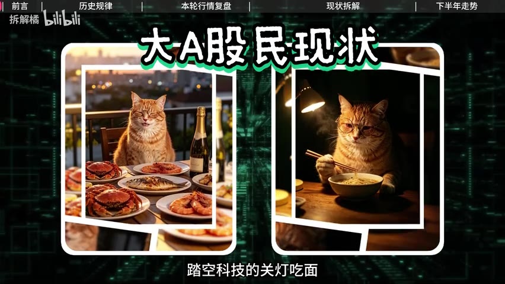
[00:10] 历史规律 / 本轮行情复盘 / 现状拆解 / 下半年走势 / 26年上半年申万一级行业涨幅 / 交额（亿元） / 行业 / 上半年涨幅（%） / 上半年成交额（亿元） / 5,583.93 / 坊织服饰（申万） / 16,184.90 / 1414.59 / 银行（申万） / -12.27 / 32,542.97 / 165.93 / 计算机（申万） / 12.43 / 195,325.48 / 817.74 / 轻工制造（中万） / -13.88 / 30,324.55 / 215.29 / 交通运输（申万） / 14.61 / 34,131.58 / 185.94 / 非银金融（申万） / -15.26 / 65,304.34 / 6,808.46 / 房地产（申万） / 16.44 / 26,344.70 / L506.27 / 社会服务（申万） / -17.50 / 16,112.24 / 1.489.25 / 汽车（申万） / 17.82 / 104,155.25 / 环保（申方） / 1.25 / 27,420.20 / 传媒（申万） / -18.75 / 82,183.42 / 有色金屋（申万） / -0.22 / 215,266.19 / 钢铁（中万） / -19.01 / 18,218.74 / 建筑装饰（中万） / 4.46 / 52,282.16 / 食品饮料（申万） / 19.52 / 37,028.55 / 国防军工（申万） / 6.59 / 127.422.33 / 美容护理（申万） / 24.86 / 4,738.81 / 家用电器（申万） / -9.25 / 36,788.99 / 农林牧渔（申万） / 25.26 / 27,396.91 / 石油石化（申万） / 10.25 / 31,726.80 / 商贸零售（申万） / -29.42 / 26,492.04 / 医药生物（申万） / -10.26 / 125.,668.67 / 高居前两位
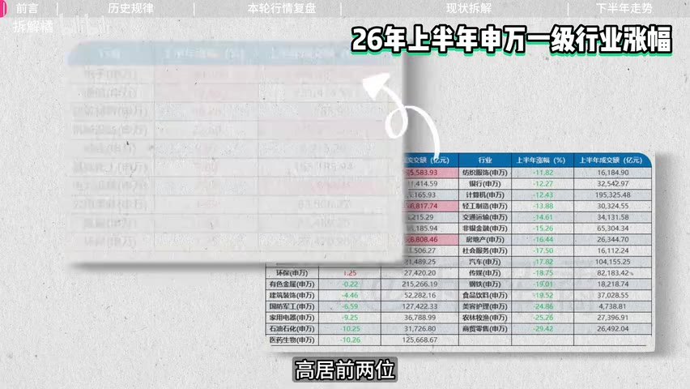
[00:20] 历史规律 / 本轮行情复盘 / 现状拆解 / 下半年走势 / 上半年A股成交额前十 / 申万一级行业 / 证券简称 / 上半年涨幅（%） / 年初总市值（亿元） / 上半年末总市值（亿元） / 上半年成交额（亿元） / 通信 / 中际旭创 / 108.44 / 6,777.82 / 14,163.48 / 28,302.44 / 通信 / 新易盛 / 97.48 / 4,282.99 / 8,463.14 / 24,489.74 / 电子 / 兆易创新 / 280.95 / 1,430.87 / 5,806.94 / 17,929.89 / 通信 / 天孚通信 / 109.07 / 1,578.39 / 3,301.71 / 16,340.04 / 电力设备 / 宁德时代 / 8.69 / 16,900.28 / 18,643.89 / 16,041.88 / 电子 / 寒武纪 / 75.52 / 5,716.15 / 10,024.73 / 15,731.63 / 电子 / 胜宏科技 / 21.24 / 2,502.95 / 3,335.14 / 14,873.02 / 电子 / 工业富联 / 16.91 / 12,322.01 / 14,317.51 / 14,470.46 / 电子 / 东山精密 / 209.92 / 1,550.46 / 4,805.22 / 13,688.78 / 有色金属 / 紫金矿业 / -25.98 / 9,030.06 / 6,620.18 / 13,238.55 / 兆易创新、天孚通信 / @拆解橘
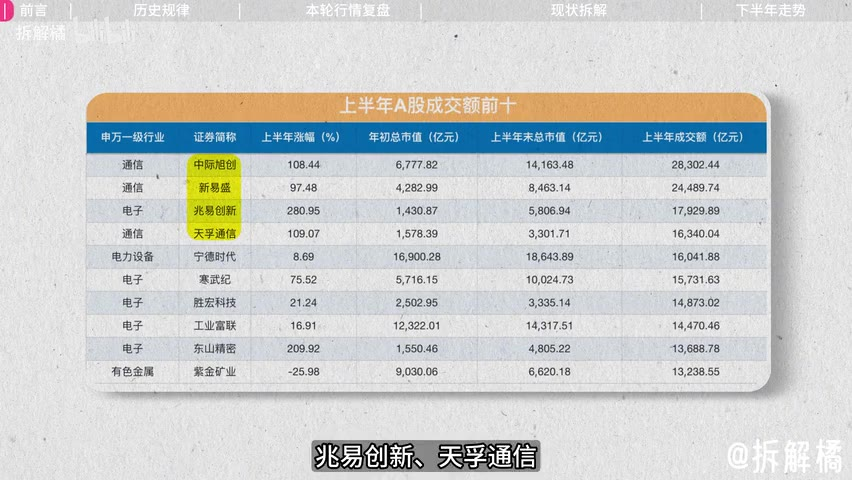
[00:30] 历史规律 / 本轮行情复盘 / 现状拆解 / 下半年走势 / 26年上半年涨幅超500%十大牛股 / 证券简称 / 上半年涨幅（前复权）年初总市值（亿元）上半年末总市值（亿元） / AI算力相关业务 / 中船特气 / 770.62% / 213.88 / 1,852.89 / 半导体、六氟化钨 / 金安国纪 / 623.15% / 121.65 / 873.38 / PCB、覆铜板 / 宏和科技 / 622.18% / 323.83 / 2,400.14 / PCB、电子布 / 宏景科技 / 602.39% / 101.78 / 712.69 / 算力租赁 / 利通电子 / 570.96% / 69.92 / 469.05 / 算力租赁 / 国际复材 / 566.71% / 263.96 / 1,759.87 / PCB、电子布 / 海星股份 / 554.57% / 45.26 / 296.24 / 超级电容、电极箔 / 民爆光电 / 541.51% / 43.53 / 268.42 / PCB、钻针 / 杭电股份 / 518.86% / 55.72 / 344.86 / 光纤 / 光智科技 / 514.07% / 69.94 / 434.10 / 磷化钢、重组 / 包括中船特气、宏和科技、利通电子等
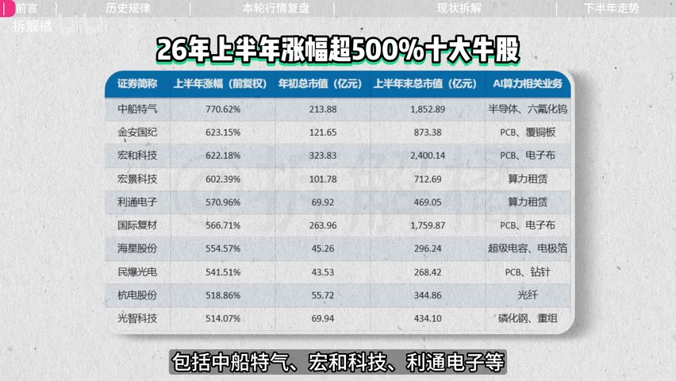
[00:40] 前言 / 历史规律 / 本轮行情复盘 / 现状拆解 / 下半年走势 / 拆解橘 / bilibili / 26年4-6月指数对比 / 科创50\上证指数\上证消费\上证金融\全指公用 / 80% / 2026-04-01 / 60% / （88900005 / 1298.20 / 上证指数（000001） / 3948.55 / 上证消费（000036） / 10422.41 / 40% / 上证金融（00003） / 全指公用（000995) / 5380.80 / 2759.15 / 20% / 20% / 4月 / 295月 / 4-6月，3个月时间
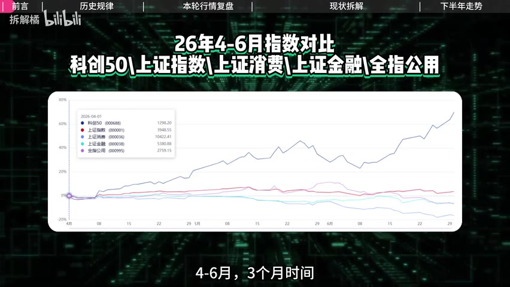
[00:50] 前言 / 历史规律 / 本轮行情复盘 / 现状拆解 / 下半年走势 / 拆解橘il / 总之，市场用真金白银教育我们上半年 / @拆解橘
[01:00] 前言 / 历史规律 / 本轮行情复盘 / 现状拆解 / 下半年走势 / 拆解橘 / bilibili / 前十“翻倍基”申购情况一览（截至6月26日） / 证券代码 / 证券简称 / 复权单位净值增 / 基金经理 / 长率 / （现任） / 暂停申类型 / 暂停申起单日申购上 / 501046.0F / 财通多策略福鑫 / 182.51 / 始日 / 限（万元） / 金梓才 / 暂停申购 / 018815.0F / 2025/5/7 / 方正富邦核心优势 / 175.77 / 吴昊 / 暂停大额申购 / 2026/5/28 / 014915.0F / 财通匠心优选一年持有 / 171. 71 / 金梓才 / 暂停申购 / 2026/6/26 / 0.00 / 017490.0F / 财通景气甄选一年持有 / 167.95 / 金梓才 / 暂停申购 / 2026/6/26 / 0.00 / 016873.0F / 广发远见智选 / 165.47 / 唐晓斌 / 暂停大额申购 / 2026/6/3 / 2.00 / 162.28 / 金梓才 / 暂停大额申购 / 2026/6/26 / 0.01 / 006502.0F / 财通集成电路产业 / 张明昕 / 暂停大额申购 / 2026/6/26 / 0.10 / 华商均衡成长 / 161.62 / 011369.0F / 暂停大额申购 / 2026/6/26 / 0.01 / 159.71 / 金梓才 / 001480.0F / 财通成长优选 / 暂停大额申购 / 2026/6/26 / 0.01 / 158.27 / 金梓才 / 财通品质甄选 / 暂停大额申购 / 2026/6/26 / 0.10 / 024480.0F / 154.95 / 张明昕 / 华商致远回报 / 024459.0F / AI芯片的热门基金 / @拆解橘
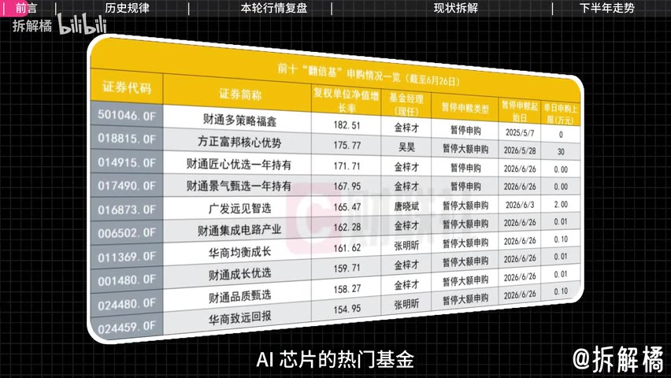
[01:10] 前言 / 历史规律 / 本轮行情复盘 / 现状拆解 / 下半年走势 / 拆解橘 / bilibili / 太罕见！今夜，72家A股公司提示风险（附：股票名单 / 2026年06月17日23:59市场资讯 / 新财经APPAA / 罕见！寒武纪等67家A股公司今夜提示风 / （来源：券研社） / 险，回应多个市场热点 / 2026年6月17日，A股市场出现罕见一幕，6月17日晚间 / 红星新闻 / 221-06 / 波动或风险提示公告，集体为近期过热的股价“降温” / 6月30日晚间，67家A股公司发布股票交易异常波动公告或股票交易风险提示公告， / 这一非比寻常的现象，直接指向了近期市场对人工智能（ / 分别是寒武纪、吃唐股份、德龙激光、晶升股份、东芯股份、芯源微、艾森股份、 / 明微电子、福光股份、深科达、中科飞测、思林杰、富信科技、天准科技、天承科 / （多层陶瓷电容器）及玻璃基板等热门概念的疯狂追逐。 / 技、中科蓝讯、盛科通信、长光华芯、购家科技、敏芯股份、恒烁股份、源杰科 / 以“英伟达概念”：更有甚者仅仅因为业务沾边便遭遇资 / 技、颁中科技、华特气体、埃科光电、茂莱光学、方邦股份、有研新材、红星发 / 是：概念炒作与公司基本面之间存在巨大温差。 / 展、绿的谐波、兴业股份、宝武镁业、技源集团、ST合力泰、声迅股份、魅视科 / 技、成都路桥、贵广网络、聚和材料、银河微电、金海通、卓邮智能、新洁能、华 / 恒生物、天普股份、深科技、凯盛科技、彩虹股份、深中华A、天禄科技、恒逸石 / 化、博医药、菜宝高科、丸美生物、ST瑞茂、蜀道装备、ST中珠、“ST和科、美 / 利信、镇海股份、万邦医药、狮头股份、ST集友、*ST帅电、雷曼光电、春光科 / 技、通化金马。 / 上述A股公司回应多个热点，包括MLCC（多层陶瓷电容器）、氮气、半导体光刻胶 / 用酚醒树脂、AI算力、玻璃基板、存储等，并提示投资者客观理性看待相关热点， / 注意投资风险。 / 这些公司主要集中在 / @拆解橘
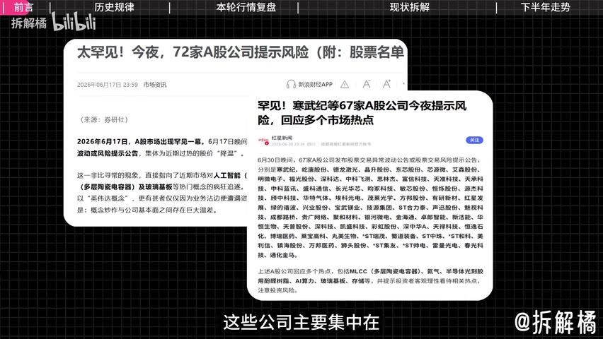
[01:20] 前言 / 历史规律 / 本轮行情复盘 / 现状拆解 / 下半年走势 / 拆解橘 / bilibili / ChatGPT / 从2023年ChatGPT引l爆AI算力开始 / @拆解橘
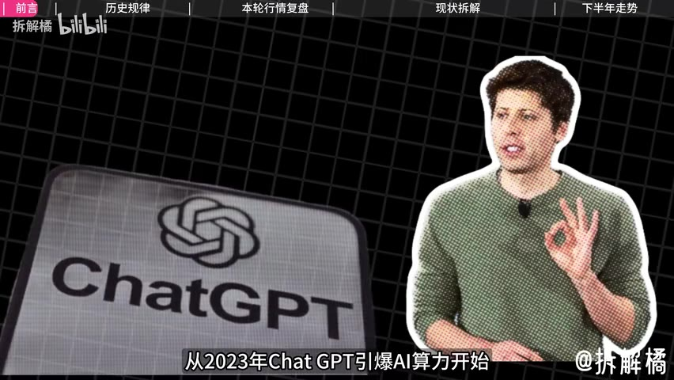
[01:30] 前言 / 历史规律 / 本轮行情复盘 / 现状拆解 / 下半年走势 / 拆解橘 / bilibili / 服务据：不是整个A产业，更不是始个科接板块 / 下应A等度不 / 核心 / 生：+术点+天 / 海3-5年-全 / 美与资开克：北厂商二手服天自 / 2.关注方向的三个额心变量 / 近年我大楼生线：动联网一大酒费 / 业不自时不会期4大生线 / 四、下半年推演 / ①205-205：移动联网（1，25年） / 向内分交上 / 三轮产业牛市复盘五阶段规律 / 2.三产业大生线 / 2206-2001: / 大活费/自酒（质，5年，后） / 新源（编合，3年，13） / 力（行） / 年中国时 / （不是看交科技 / 点+改技水突健，长期后事成型 / 输证，明+公+松种合力入场 / 25月26个行金下，4月25个行金下票 / 0%，上证几不动 / ③上学年全市场七城个限号员，+大牛股全出自A力间 / 3N点： / 1一公，万生：虹点 / 上学年成交额 / 5%个成交点比50%间值 / (25月月）上动风 / 应用无业技支厚，材行情驶速 / CPT湿，A教师、应用率先理发 / 冰轮A力行情充整盘 / 美用达业续期，烫金转向算力建 / (2024-2020R89/0PC8 / 3.行 / 三、现状：前有多疯狂？ / （2006）版/电子MLCC/基版 / 4月初至%，+证周力 / 品用：共 / .P / 全处于历48%-100%分位 / 4.注化 / 大家好，这里是拆解橘，我是橘长 / @拆解橘
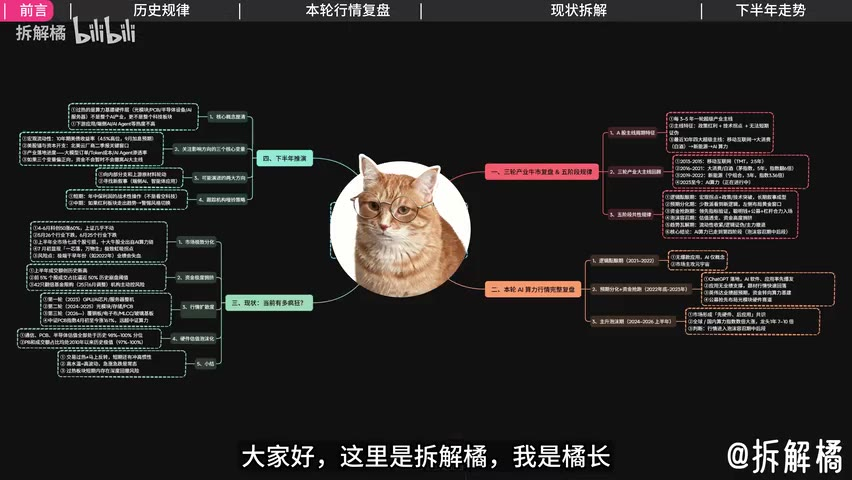
[01:40] 前言 / 历史规律 / 本轮行情复盘 / 现状拆解 / 下半年走势 / 拆解橘 / bilibili / ①每3-5年一轮超级产业主线 / ②主线特征：政策红利+技术拐点+无法短期 / 1、A股主线周期特征 / 证伪 / ③最近10年四大超级主线：移动互联网→大消费 / （白酒）→新能源→A算力 / ①2013-2015:移动互联网（TMT，25年） / 三轮产业牛市复盘&五阶段规律 / 2、三轮产业大主线回顾 / ②2016-2021:大消费/白酒（茅指数，5年，指数翻6倍） / ③2019-2022：新能源（宁组合，3年，指数3.36倍） / 2023至今：A算力（正在进行中） / ①逻辑配酿期：宏观拐点+政策/技术突破，长期叙事成型 / ②预期分化期：少数派看到新逻辑，左侧布局黄金窗口 / 本轮“科技牛” / 3、五阶段共性规律 / ③资金抢跑期：领先指标验证，聪明钱+公募+杠杆合力入场 / ④泡沫容超期：估值透支、资金高度拥挤 / 业牛市复盘 / ③趋势瓦解期：流动性收紧/逻辑证伪/主力撒退 / 核心结论：A算力已走到第四阶段（泡沫容忍期中后段） / 解橘 / 1、逻辑际酿期（2021-2022） / ①无爆款应用，A仅概念 / ②市场主攻元宇宙 / ①ChatGPT落地，A软件、应用率先爆发 / 本轮AI算力行情完整复盘 / 2、预期分化+资金抢跑（2022年底-2023年） / ②应用无业绩支撑，题材行情快速回落 / ③英伟达业绩超预期，资金转向算力基建 / 公募抢先布局光模块硬件赛道 / 它们是怎么涨上去又是如何瓦解的 / 成「先硬件、后应用]共识 / 拆解橘 / 国内算力指数数倍大涨，龙 / 进入泡法容忍期中后段
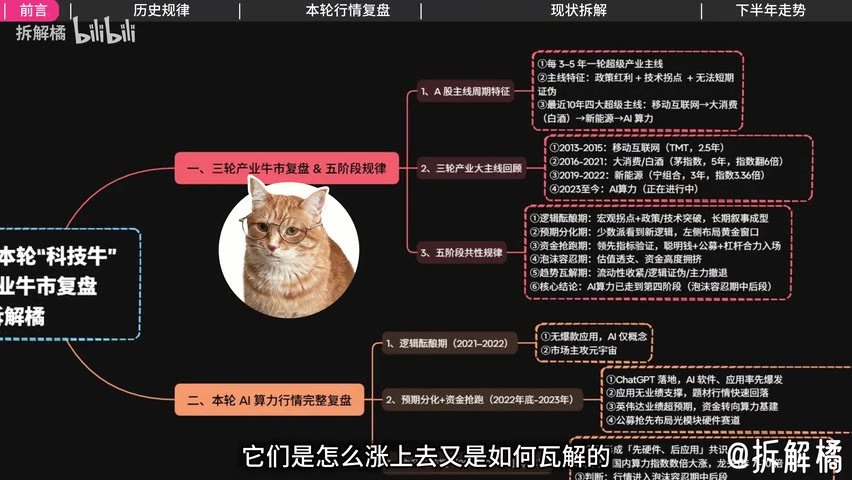
[01:50] 前言 / 本轮行情复盘 / 下半年走势 / biibili / 拆解橘 / ①向内部分支和上游原材料轮动 / ②寻找新叙事（端侧A、智能体应用） / 3、可能演进的两大方向 / ①短期：年中保利润的战术性操作（不是看空科技） / ②中期：如果红利板块走出趋势一警惕风格切换 / 4、跟踪机构哑铃策略 / 一口气了解本轮“科 / ①4-6月科创50涨60%，上证几乎不动 / 和历史产业牛市复 / ②5月26个行业下跌，6月25个行业下跌 / ③上半年全市场七成个股亏损，十大牛股全出自A算力链 / 1、市场极致分化 / @拆解橘 / 7月初显现「一芯落，万物生]极致虹吸拐点 / ③风险点：极端干早年份（如2022年）业绩会失血 / ①上半年成交额创历史新高 / ②前5%个股成交占比逼近50%历史前盘间值 / 2、资金极度拥挤 / ③42只翻倍基金限购（25只6月调整）机构主动控风险 / ①第一轮（2023）GPU/AI芯片/服务器整机 / ②第二轮（2024-2025）光模块/存储/PCB / 3、行情扩散度 / 三、现状：当前有多疯狂？ / ③第三轮（2026-）覆铜板/电子布/MLCC/玻璃基板 / ④中证PCB指数4月初至今涨161%，远超中证算力 / ①通信、PC8、半导体估值全部处于历史98%-100%分位 / ②PB和成交额占比均处2010年以来历史极值（97%-100%） / 4、硬件估值泡沫化 / ①交易过热马上反转，短期还有冲高惯性 / ②高水温-高波动，急涨急跌是常态 / 5、小结 / ③过热板块短期内存在深度回撒风险 / 3、相关指数碾压全场 / @拆解橘
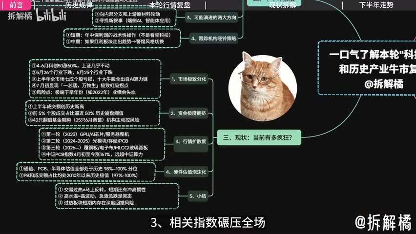
[02:00] 前言 / 历史规律 / 本轮行情复盘 / 现状拆解 / 下半年走势 / 拆解橘 / bilibili / ①过热的是算力基建硬件层（光模块/PCB/半导体设备/A / 服务器）不是整个AI产业，更不是整个科技板块 / 1、核心概念厘清 / ①下游应用/端侧Al/AlAgent等热度不高 / ①宏观流动性：10年期美债收益率（45%高位，9月加息预期） / ②美股锚与资本开支：北美云厂商二季报关键窗口 / ③产业落地进度-大模型订单/Token成本/AlAgent渗透率 / 2、关注影响方向的三个核心变量 / ③如果三个变量偏正向，资金不会暂时不会撒离A大主线 / 四、下半年推演 / ①向内部分支和上游原材料轮动 / ②寻找新叙事（端侧A、智能体应用） / 3、可能演进的两大方向 / ①短期：年中保利润的战术性操作（不是看空科技） / ②中期：如果红利板块走出超势→警惕风格切换 / 4、跟踪机构哑铃策略 / 一口气了解本轮“科 / ①4-6月科创50涨60%，上证几乎不动 / 和历史产业牛市复 / ②5月26个行业下跌，6月25个行业下跌 / ③上半年全市场七成个股亏损，十大牛股全出自A算力链 / 1、市场极致分化 / ④7月初显现「一芯落，万物生]极致虹吸拐点 / @拆解橘 / ③风险点：极端干早年份（如2022年）业绩会失血 / ①上半年成交额创历史新高 / ②前5%个股成交占比逼近50%历史前盘间值 / 资金极度拥挤 / 2026下半年的市场 / @拆解橘 / ③42只翻倍基金限购（25只6月调整）机构主动控风险
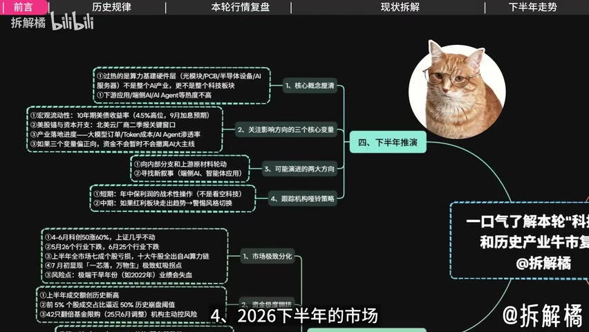
[02:10] 前言 / 大家在股海沉浮多少年？ / 大家在股海沉浮多少年了
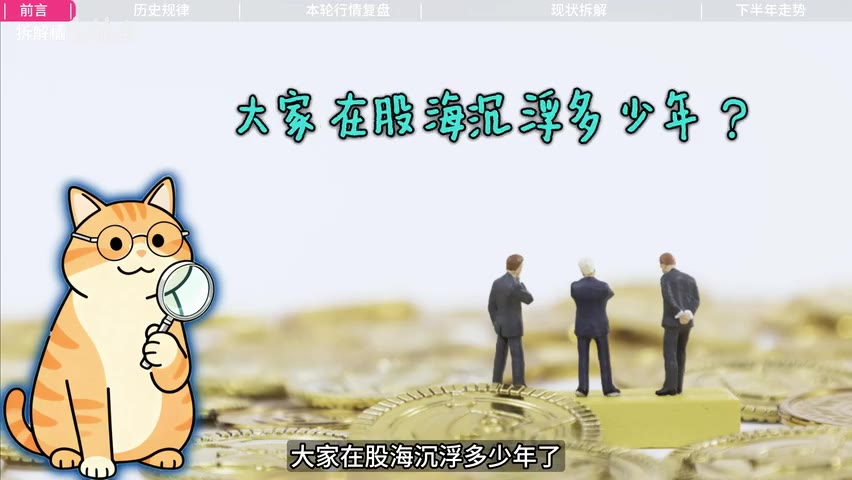
[02:20] 前言 / 历史规律 / 本轮行情复盘 / 现状拆解 / 下半年走势 / 拆解橘 / bilibili / 为什么？ / @拆解橘
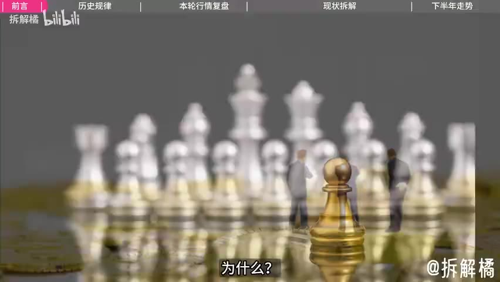
[02:30] 前言 / 历史规律 / 本轮行情复盘 / 现状拆解 / 下半年走势 / 拆解橘 / bilibili / 就会把估值打到极致 / @拆解橘
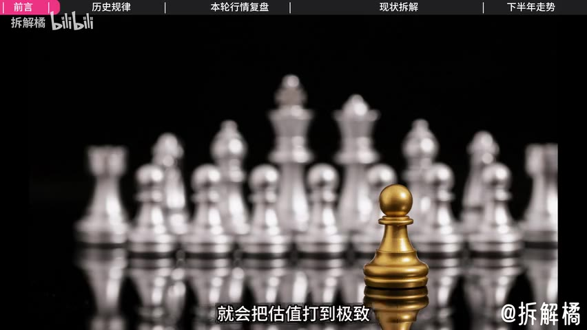
[02:40] 前言 / 历史规律 / 本轮行情复盘 / 现状拆解 / 下半年走势 / 拆解橘 / bilibili / 紧接着，资金会快速找到下一个故事 / @拆解橘
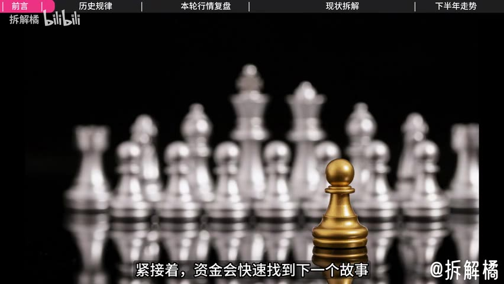
[02:50] 前言 / 历史规律 / 本轮行情复盘 / 现状拆解 / 下半年走势 / 拆解橘 / bilibili / 2013-2015: / 移动互联网 / （TMT，2.5年） / 2016-2021: / 消费茅指数抱团 / （5年长主线） / 2019-2022: / 新能源宁组合 （3年） / 2023至今： / AI算力 / 2016~2021年白酒（大消费）
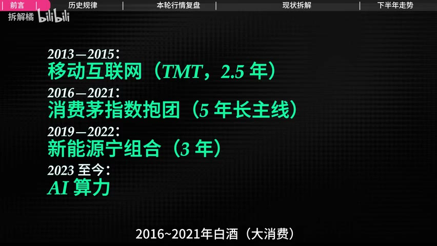
[03:00] 前言 / 历史规律 / 本轮行情复盘 / 现状拆解 / 下半年走势 / 拆解橘 / bilibili / 2013-2015: / 移动互联网 / (TMT，2.5 年) / 2016-2021: / 消费茅指数抱团 / （5年长主线） / 2019-2022: / 新能源宁组合 (3年) / XX银行 / 2023至今： / AI算力 / 比如炒作白酒那一轮
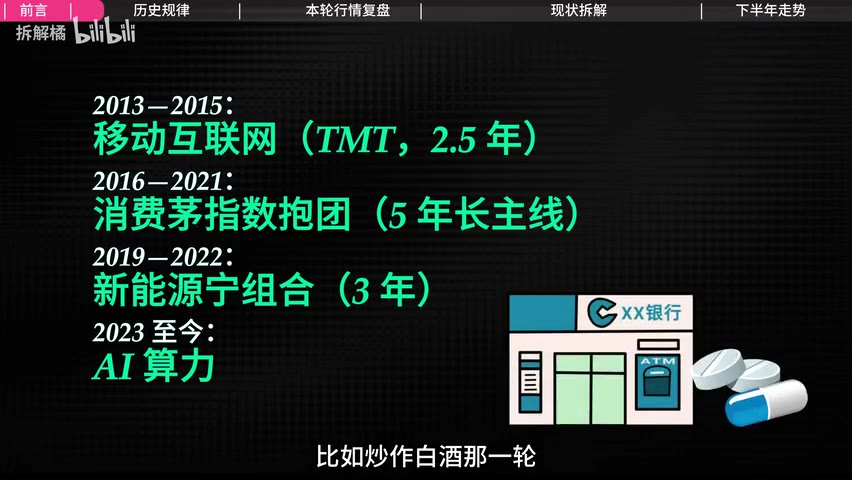
[03:10] 前言 / 历史规律 / 本轮行情复盘 / 现状拆解 / 下半年走势 / RETURNS / GROWTH / TIME / 还得有非常硬核的产业逻辑支撑 / @拆解橘
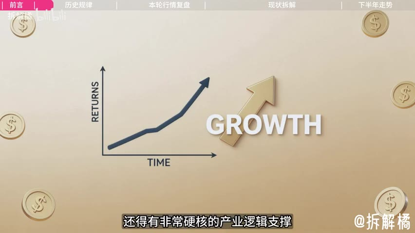
[03:20] 前言 / 历史规律 / 本轮行情复盘 / 现状拆解 / 下半年走势 / 拆解橘 / biibili / 宏大叙事 / 又或者产品渗透率井喷式爆发
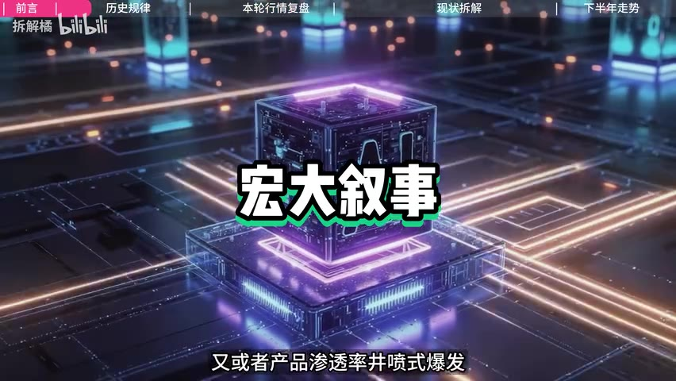
[03:30] 前言 / 历史规律 / 本轮行情复盘 / 现状拆解 / 下半年走势 / 拆解橘 / bilibili / 历史上3轮有产业逻辑支撑的大主线行情
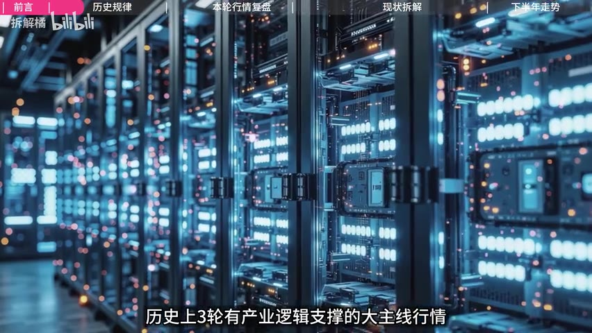
[03:40] 前言 / 历史规律 / 本轮行情复盘 / 下半年走势 / 拆解橘 / biibili / 2012 / 10年后如果电商在中国零售市场 / 2012
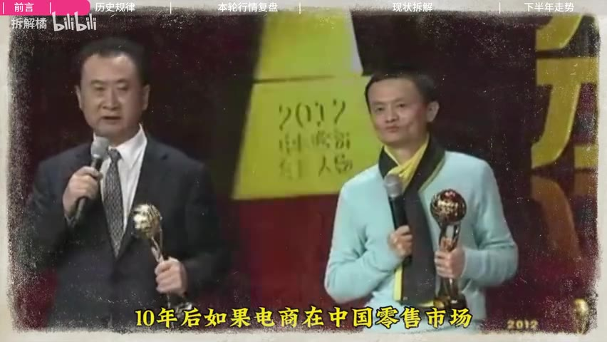
[03:50] 前言 / 本轮行情复盘 / 现状拆解 / 下半年走势 / 图：2012-2015年腾讯月活跃用户数大幅增长 / 880.00 / 860.00 / 840.00 / 820.00 / 800.00 / 780.00 / 0009 / 740.00 / 720.00 / 700.00 / 数据来源：浙商证券 / 发生在2012年12月
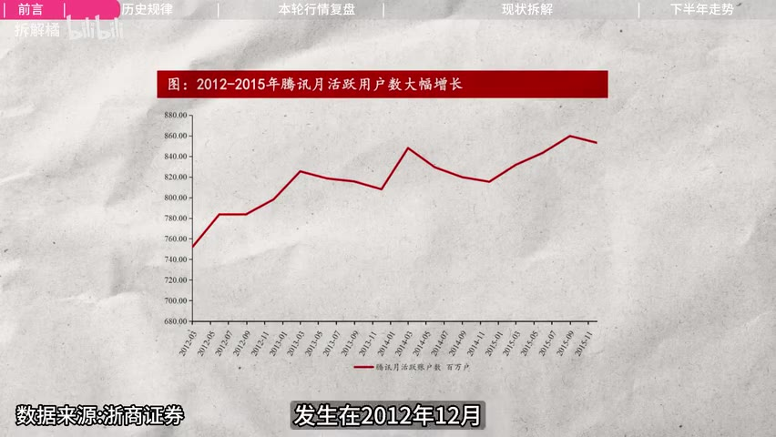
[04:00] 前言 / 本轮行情复盘 / 现状拆解 / 下半年走势 / 图：2012-2015年腾讯月活跃用户数大幅增长 / 880.00 / 860.00 / 840.00 / 820.00 / 800.00 / 780.00 / 760.00 / 740.00 / 720.00 / 00000 / 数据来源：浙商证券高层反复强调不能再靠粗放投资拉动经济
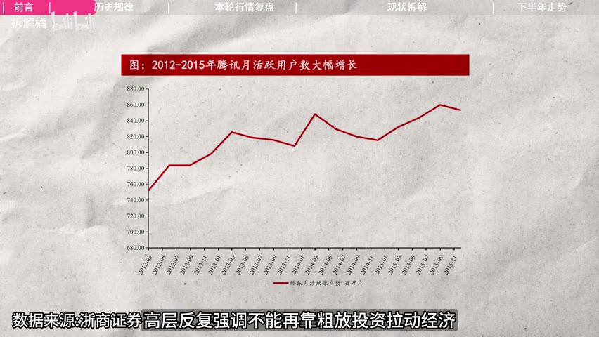
[04:10] 前言 / 本轮行情复盘 / 现状拆解 / 下半年走势 / 图：智能手机快速普及 / 1.600.00 / 全球：出货量：智能手机：当季值 / 1.400.00 / 1,200.00 / 1,000.00 / 800.00 / 600.00 / 400.00 / 200.00 / 0.00 / 2012 / 2013 / 2014 / 2015 / 数据来源：浙商证券 / 就成了全村的希望
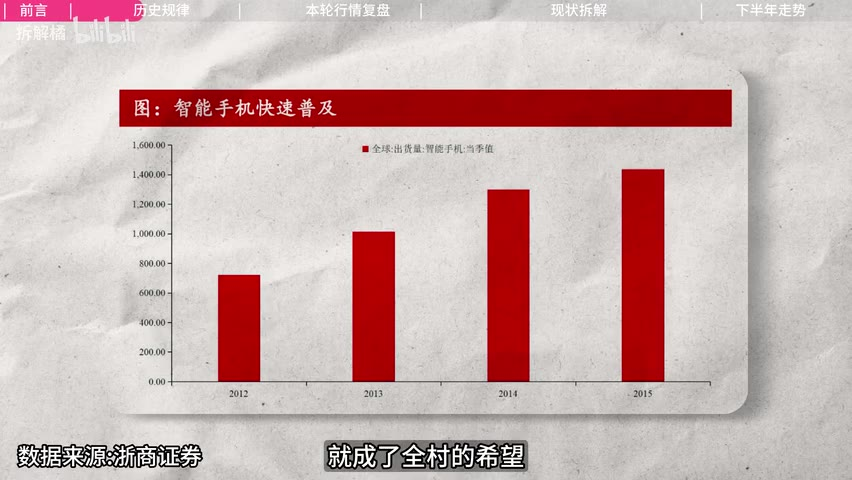
[04:20] 前言 / 本轮行情复盘 / 现状拆解 / 下半年走势 / 图：2014年信息技术行业成为基金的第一大重仓板 / 基金持仓占比（%） / 20.00 / 18.00- / 16.00- / 14.00- / 12.00- / 10.00- / 8.00- / 6.00- / 4.00- / 2.00 / 0.00 / 信息技术医疗保健 / 工业 / 可选消费金融日需消费材料 / 能源公用事业电信服务 / 数据来源：浙商证券 / 020轮番炸场，炒完你的炒你的
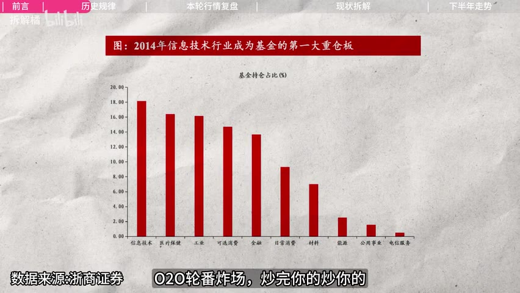
[04:30] 前言 / 历史 / 本轮行情复盘 / 现状拆解 / 下半年走势 / 图：2014年信息技术行业成为基金的第一大重仓板 / 基金持仓占比（%） / 20.00 / 18.00- / 16.00- / 14.00- / 12.00- / 10.00- / 8.00- / 6.00- / 4.00- / 2.00 / 0.00 / 信息技术医疗保健 / 工业 / 可选消费金融日常消费材料 / 能源公用事业电信服务 / 数据来源：浙商证券 / 等待它的就是涨停
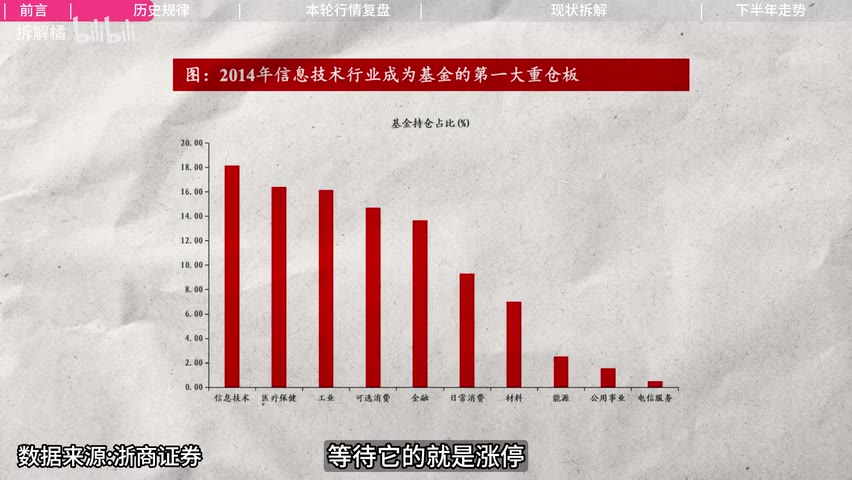
[04:40] 前言 / 历史 / 规律 / 本轮行情复盘 / 下半年走势 / 吹啊吹啊我赤脚不害怕
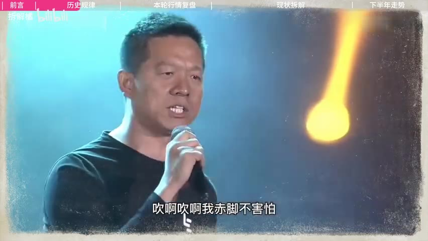
[04:50] 前言 / 历史 / 现律 / 本轮行情复盘 / 下半年走势 / 拆解橘 / bilbi / 你看我在勇敢地去挥手啊
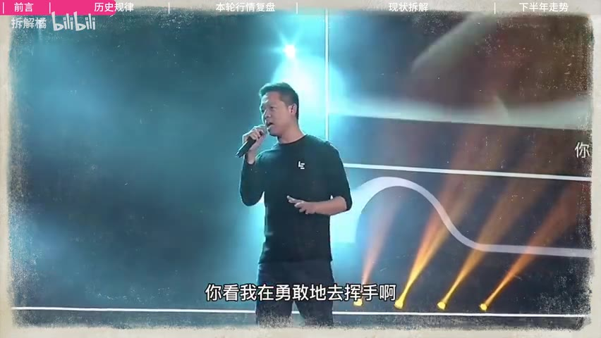
[05:00] 前言 / 历史规律 / 本轮行情复盘 / 现状拆解 / 下半年走势 / 拆解橘i / 2016年~2021年大消费 / 图：中证消费指数、同花顺全A指数、大消费板块指数相对于同花顺全A指数的超额收益 / 34167 / 300.0% / 29167 / 250.0% / 24167 / 200.0% / 19167 / 150.0% / 14167 / 9167 / 100.0% / 4167 / 50.0% / -833 / 0.0% / -50.0% / 中证消费 / 同花顺全A（加权） / 中证消费指数相对于同花顺全A指数的超额收益 / 更准确地说，是抱团自酒
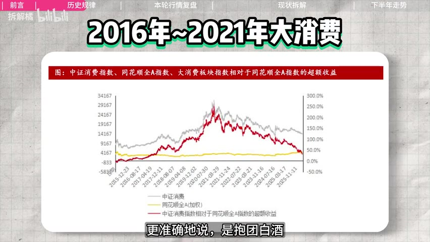
[05:10] 前言 / 历史规 / 本轮行情复盘 / 现状拆解 / 下半年走势 / 拆解橘bib / 中证白酒2016-2021年走势 / 三自三 / 2016-01-04至2025-12-31 / 更新日期：2025-12-31 / 指数比较 / 导出行情 / 6201.26±88.59(1.45%) / 作收：6112.67 / 今开：6101.8成交量：226963115 / 2021.06 / 21000 / 21395 / 18213 / 15031 / 11848 / 2016.06 / 3000 / 2302 / 7月 / 2017 / 2018 / 2019 / 2020 / 2021 / 2022 / 2023 / 2024 / 2025 / 指数涨了6倍 / @拆解橘
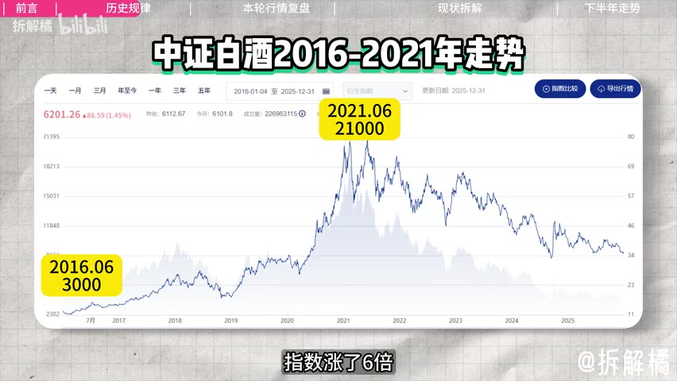
[05:20] 前言 / 历史规律 / 本轮行情复盘 / 现状拆解 / 下半年走势 / 拆解2500.00 / 贵州茅台股价走势 / 2385.65 / 2000.00 / 1500.00 / 1000.00 / 500.00 / 0.00 / 207.82 / ssssssss / 2013 / 2014 / 2015 / 2016 / 2017 / 2018 / 2019 / 2020 / 2021 / 2022 / 2023 / 2024 / 2025 / 2026 / 白酒我爱你！ / 白酒兴国 / 白酒永远没有泡沫 / 科技又跌了，只有白酒能富国 / 打倒科技半导体 / 有泡沫的那是啤酒 / 只有白酒能兴邦 / 年少不知白酒好，错把科技当成宝
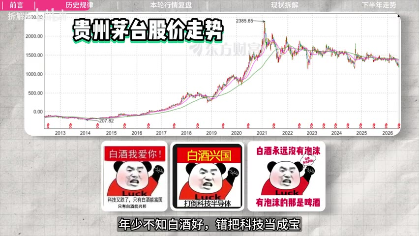
[05:30] 前言 / 历史规律 / 本轮行情复盘 / 现状拆解 / 下半年走势 / 拆解橘i# / 内需将成为增长主引擎
[05:40] 前言 / 历史规律 / 本轮行情复盘 / 于是，外资带头冲锋
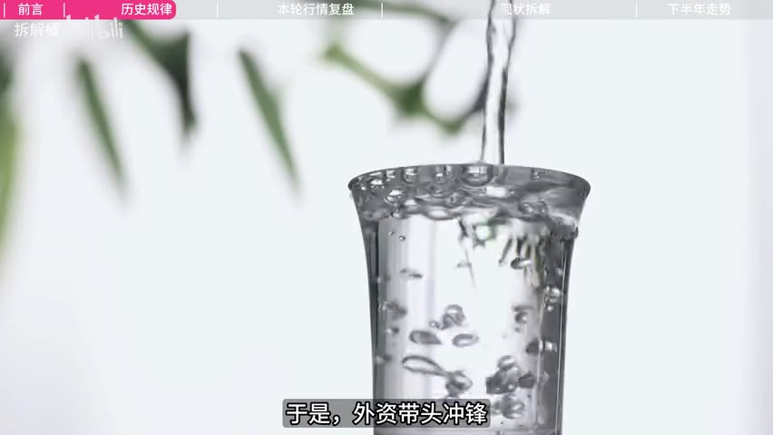
[05:50] 前言 / 历史规律 / 本轮行情复盘 / 现状拆解 / 下半年走势 / 图：北向资金对宁德时代持股从2019年初2%升至2021年的12% / 14.0 / 中美贸易摩擦 / 资料来源：Wind，浙商证券研究所 / 是中美贸易摩擦不断升温
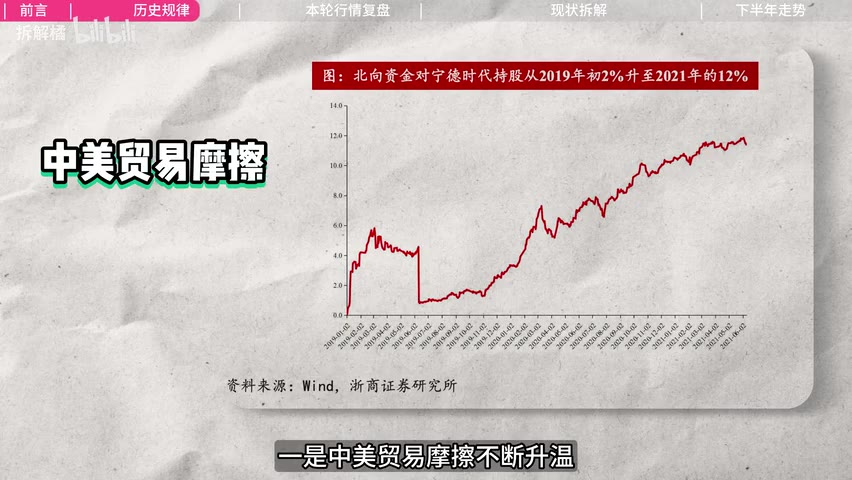
[06:00] 前言 / 历史规律 / 本轮行情复盘 / 现状拆解 / 下半年走势 / 图：北向资金对宁德时代持股从2019年初2%升至2021年的12% / 14.0 / 中美贸易摩擦 / 全球能源转型 / 资料来源：Wind，浙商证券研究所 / 刚好踩中这几个政策大风口
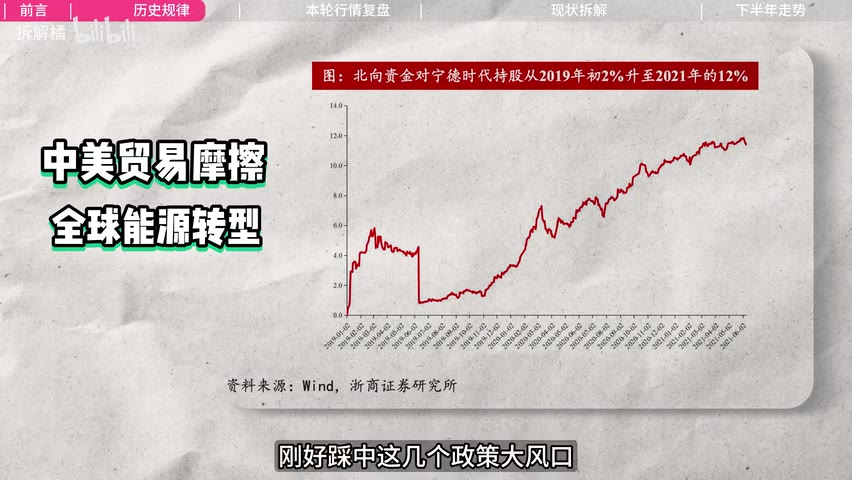
[06:10] 前言 / 历史规律 / 本轮行情复盘 / 现状拆解 / 下半年走势 / 拆解橘 / Dilbii / CTP3.0麒麟电池 / 还把生产成本打了下来
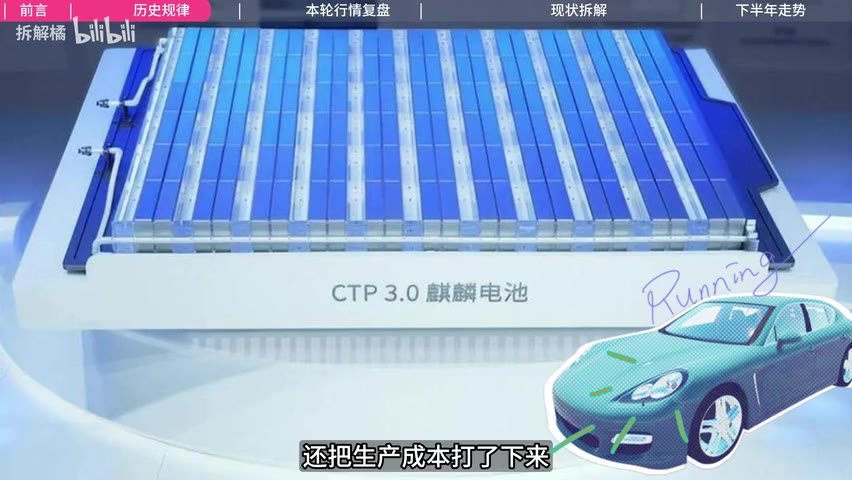
[06:20] 前言 / 历史规律 / 本轮行情复盘 / 现状拆解 / 下半年走势 / 拆解橘 / 中证内地新能源主题指数 / 至三一自三 / 2018-07-02 至2022-07-29 / 更新日期：2022-07-29 / 指数比校 / 导出行情 / 今开： / 成交量：线交额：亿元 / 4815 / 4183 / 3年3 / 3.36倍 / ISSS / 2919 / 2287 / 1655 / 1023 / 2019 / 2020 / 7月 / 2021 / 7月 / 2022 / 7月 / 2021年10月最高触摸到4800点 / @拆解橘
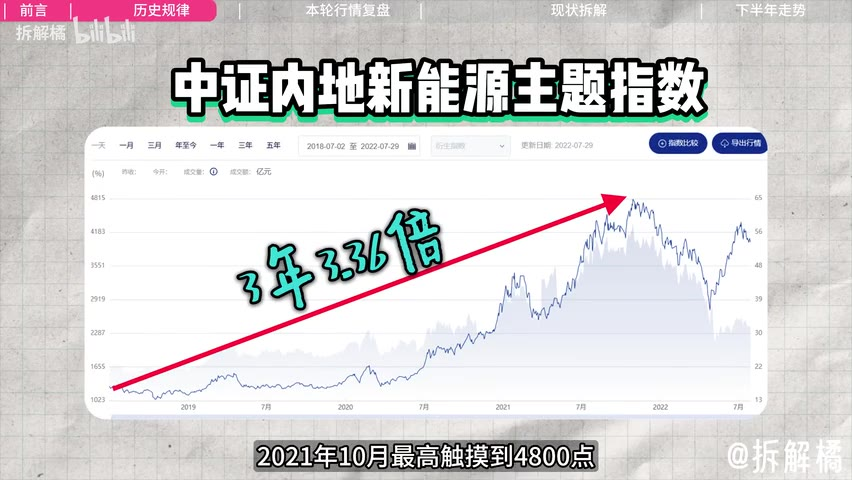
[06:30] 前言 / 历史规律 / 本轮行情复盘 / 现状拆解 / 下半年走势 / 拆解橘 / 虽然叙事各不相同 / @拆解橘
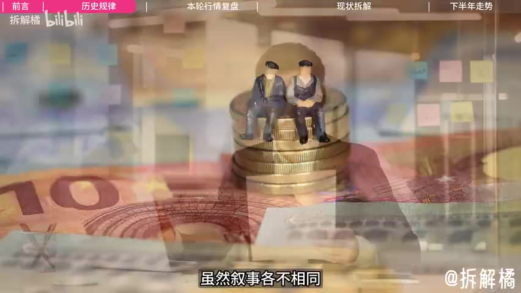
[06:40] 前言 / 历史规律 / 本轮行情复盘 / 现状拆解 / 下半年走势 / 拆解橘 / Silbii / 5个阶段 / 核心特征 / 驱动上涨逻辑诞生 / 逻辑配酿 / 宏观环境变奏、政策红利、技术突破，行业长期增长故事正式成 / 型，是机构长期布局的根基 / 多空出现巨大分歧 / 预期分化 / 少数人看到新机会，提出新逻辑，属于左侧布局的黄金窗口期 / 各路聪明钱集中进场 / 资金抢跑 / 比如外资、公募机构、融资杠杆资金涌入，资金形成合力，主线 / 行情正式确立 / 市场对利空完全麻木 / 泡沫容忍 / 高估值、拥挤筹码都不再是问题，空头纷纷倒戈，大家只相信长 / 期故事，风险被集体忽略 / 行情迎来致命拐点 / 趋势瓦解 / 流动性收紧、业绩下滑，获利资金集体出逃，上涨趋势彻底瓦 / 解，开启戴维斯双杀 / 解橘 / 《复盘：A股历史上的七次 / “板块共识” / 行情始末》提到
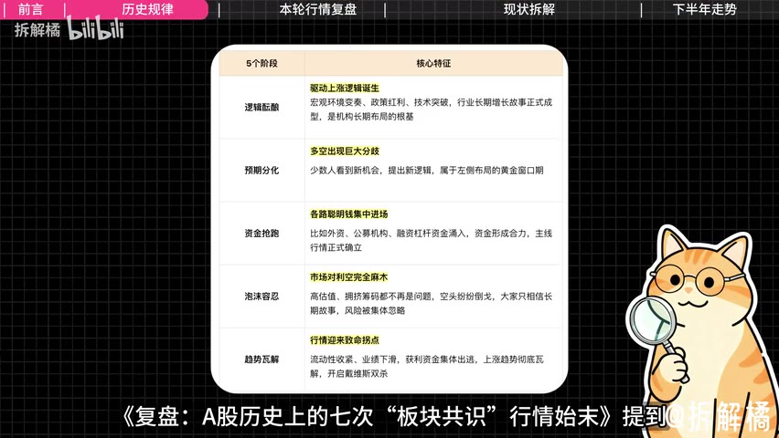
[06:50] 前言 / 历史规律 / 本轮行情复盘 / 现状拆解 / 下半年走势 / 拆解橘 / Silbi / 5个阶段 / 核心特征 / 驱动上涨逻辑诞生 / 逻辑配酿 / 宏观环境变奏、政策红利、技术突破，行业长期增长故事正式成 / 型，是机构长期布局的根基 / 多空出现巨大分歧 / 预期分化 / 少数人看到新机会，提出新逻辑，属于左侧布局的黄金窗口期 / 各路聪明钱集中进场 / 资金抢跑 / 比如外资、公募机构、融资杠杆资金涌入，资金形成合力，主线 / 行情正式确立 / 市场对利空完全麻木 / 泡沫容忍 / 高估值、拥挤筹码都不再是问题，空头纷纷倒戈，大家只相信长 / 期故事，风险被集体忽略 / 行情迎来致命拐点 / 趋势瓦解 / 流动性收紧、业绩下滑，获利资金集体出逃，上涨趋势彻底瓦 / 解，开启戴维斯双杀 / 解橘 / 有了参照坐标
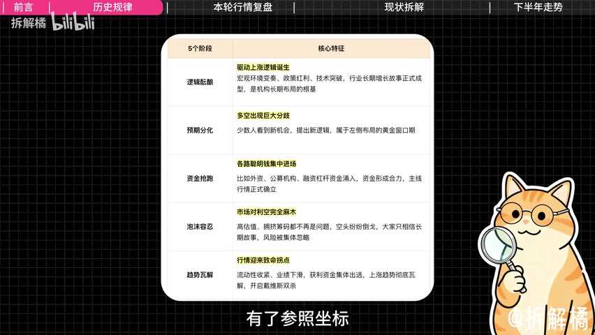
[07:00] 前言 / 历史规律 / 本轮行情复盘 / 现状拆解 / 下半年走势 / 拆解橘 / Silibii / 5个阶段 / 核心特征 / 驱动上涨逻辑诞生 / 逻辑酝酿 / 宏观环境变奏、政策红利、技术突破，行业长期增长故事正式成 / 型，是机构长期布局的根基 / 多空出现巨大分歧 / 预期分化 / 少数人看到新机会，提出新逻辑，属于左侧布局的黄金窗口2 / 各路聪明钱集中进场 / 资金抢跑 / 比如外资、公募机构、融资杠杆资金涌入，资金形成合力， / 解橘 / 行业迎来政策扶持或技术（格局）突破
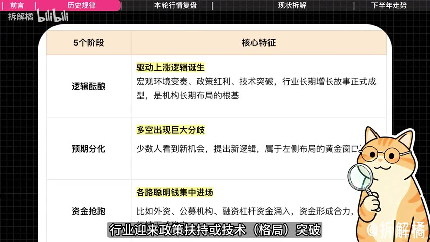
[07:10] 前言 / 历史规律 / 本轮行情复盘 / 半年走势 / 拆解橘 / 5个阶段 / 核心特征 / 驱动上涨逻辑诞生 / 逻辑酝酿 / 宏观环境变奏、政策红利、技术突破，行业长期增长故事正式成 / 型，是机构长期布局的根基 / 多空出现巨大分歧 / 预期分化 / 少数人看到新机会，提出新逻辑，属于左侧布局的黄金窗口期 / 各路聪明钱集中进场 / 资金抢跑 / 比如外资、公募机构、融资杠杆资金涌入，资金形成合力 / 行情正式确立 / 解橘 / 市这是左侧布局的黄金窗口
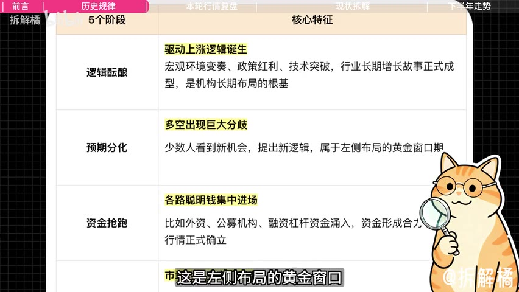
[07:20] 前言 / 历史规律 / 本轮行情复盘 / 下半年走势 / 拆解橘 / Silbii / 川9 / 补贴退坡后将一地鸡毛 / @拆解橘
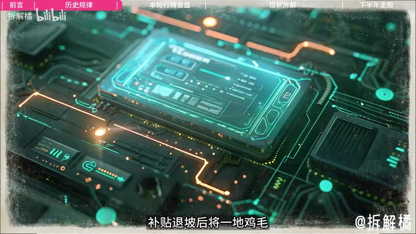
[07:30] 前言 / 历史规律 / 本轮行情复盘 / 现状拆解 / 下半年走势 / 拆解橘ii / 这种认知直接重塑了宁德时代的估值逻辑 / @拆解橘
[07:40] 前言 / 历史规律 / 走势 / 逻辑酝酿 / 宏观环境变奏、政策红利、技术突破，行业长期增长故事正式成 / 拆解橘 / 型，是机构长期布局的根基 / 多空出现巨大分歧 / 预期分化 / 少数人看到新机会，提出新逻辑，属于左侧布局的黄金窗口期 / 各路聪明钱集中进场 / 资金抢跑 / 比如外资、公募机构、融资杠杆资金涌入，资金形成合力，主线 / 行情正式确立 / 市场对利空完全麻木 / 泡沫容忍 / 高估值、拥挤筹码都不再是问题，空头纷纷倒戈，大家只相信长 / 期故事，风险被集体忽略 / 主线逻辑正式确立 / 解橘
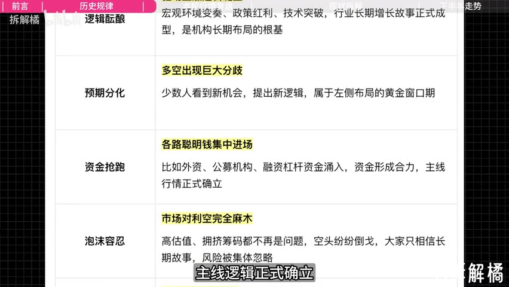
[07:50] 前言 / 历史规律 / 本轮行情复盘 / 下半年走势 / 拆解橘 / bilbii / 0.5 / 0.4 / 0.3 / 0.2 / 0.1 / 0.0 / 1Q-2021 / 3Q-2021 / 4Q-2021 / 1Q-2022 / 2Q-2022 / 3Q-2022 / 4Q-2022 / 1Q-2023 / 2Q-2023 / 3Q-2023 / 4Q-2023 / Vehicle Deliveries / (millions ofunits) / 电动车进入走量时代 / @拆解橘
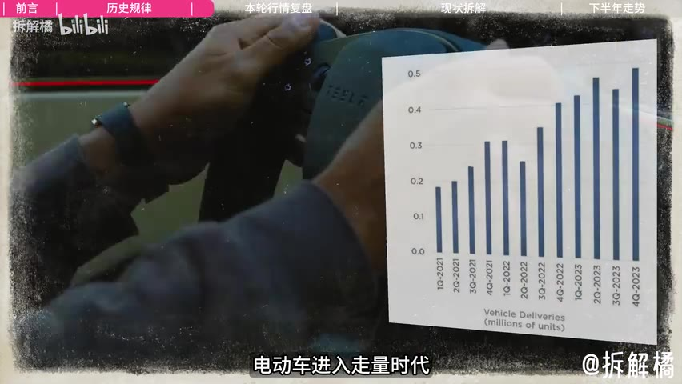
[08:00] 前言 / 历史规律 / 本轮行情复盘 / 现状拆解 / 下半年走势 / 拆解橘 / bilbii / 图：2020年新能源板块融资余额大幅上涨 / 8000 / 0.6 / 7000 / 0. 5 / 6000 / 0.4 / 5000 / '0 / 0.2 / 4000 / 3000 / 2000 / 1000 / 0. / 2020.01 2020.02 2020.03 2020.04 2020.05 2020.06 2020.07 2020.08 2020.09 2020.10 2020.11 2020.12 / 新能源板块融资余额 / 新能源板块融资余额增速 / 新能源板块融资余额占流通市值比例 / 2020年底新能源板块 / @拆解橘
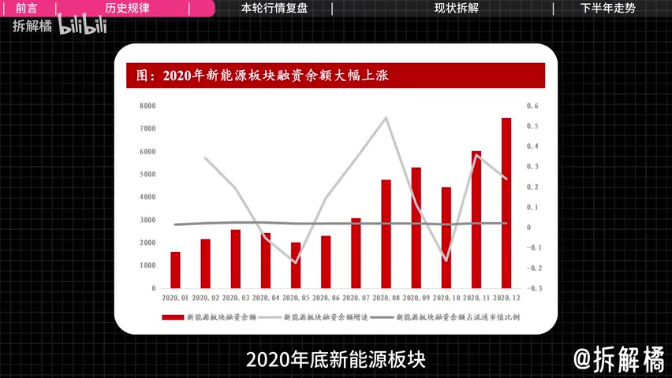
[08:10] 前言 / 历史规律 / 走势 / 拆解橘 / 各路聪明钱集中进场 / 资金抢跑 / 比如外资、公募机构、融资杠杆资金涌入，资金形成合力，主线 / 行情正式确立 / 市场对利空完全麻木 / 泡沫容忍 / 高估值、拥挤筹码都不再是问题，空头纷纷倒戈，大家只相信长 / 期故事，风险被集体忽略 / 行情迎来致命拐点 / 趋势瓦解 / 流动性收紧、业绩下滑，获利资金集体出逃，上涨趋势彻底瓦 / 解，开启戴维斯双杀 / 哦，原来这就是主线 / @拆解橘
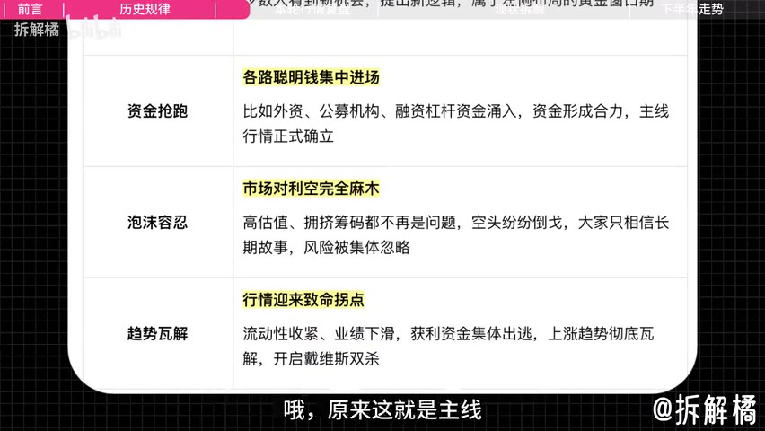
[08:20] 前言 / 历史规律 / 本轮行情复盘 / 现状拆解 / 下半年走势 / 拆解橘 / Dilibii / -TTM / 0%分位点值 / 71.44 / 50%分位点值 / 20%分位点值 / 收盘点位 / 7.20万 / 1.707 / 2016-07-082017 / 2021 / 2022 / 2023 / 2025 / 2026-07-01 / 像2021年中证白酒的市盈率 / (PE-TTM) / @拆解橘
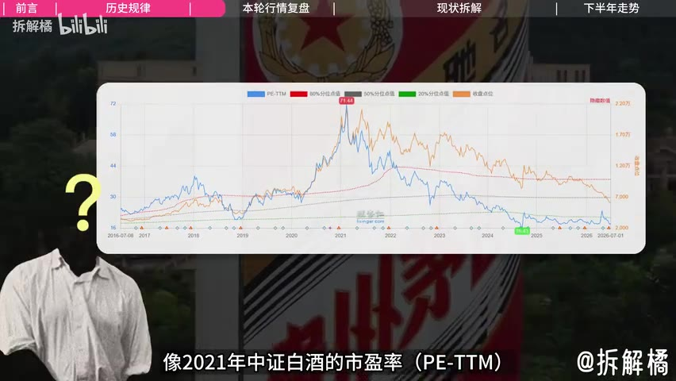
[08:30] 前言 / 历史规律 / 本轮行情复盘 / 现状拆解 / 下半年走势 / 拆解橘 / Dibi / 拉点售 / 20%分位点值 / 收盘点位 / 2.20万 / 1.7075 / 1.20万 / 2016-07-082017 / 2018 / 2019 / 2021 / 2022 / 20262026-07-01 / 2,000 / MOUTAI DS / 因为有指数级增长的潜力 / @拆解橘
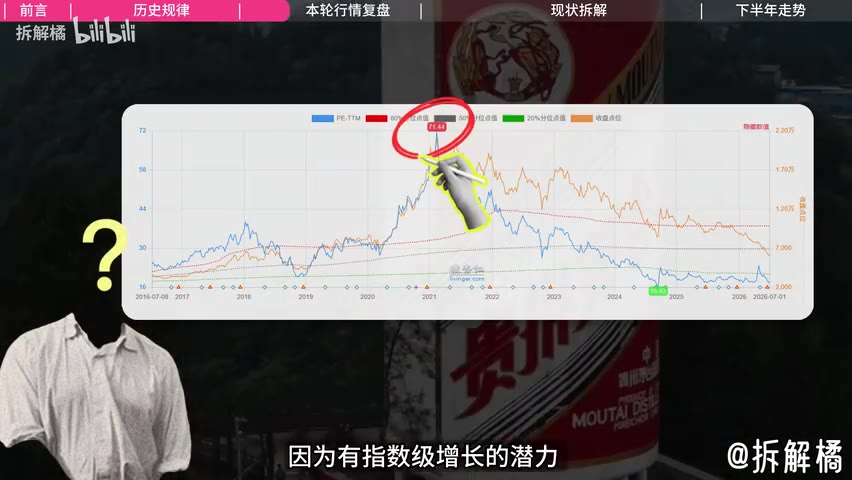
[08:40] 前言 / 历史规律 / 本轮行情复盘 / 现状拆解 / 下半年走势 / 拆解橘 / ilbili / 分位点值 / 50%分位点值 / 20%分位点值 / 理杏仁前复权 / 隐藏数值 / 215.88 / 理仁削复校（元） / AA40 / 2018-06-11 / 2019 / 2020 / 2021 / 2022 / 2023 / 2024 / 2025 / 2026 / 2026-07-01 / 市场完全不拿它当制造企业看 / @拆解橘
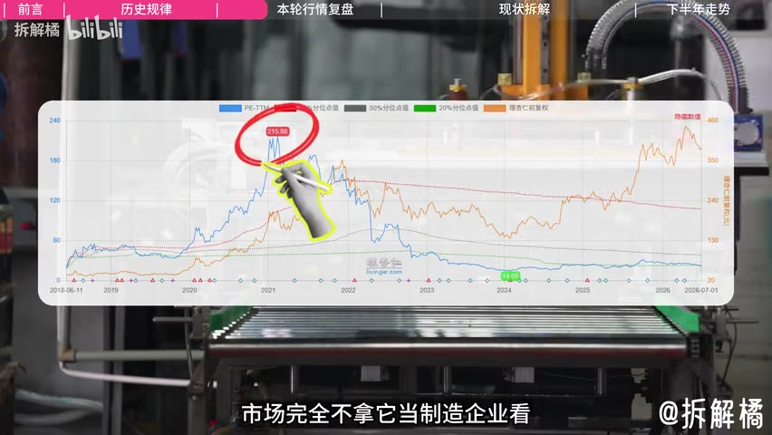
[08:50] 前言 / 历史规律 / 法规环境变奏、政策红利、技术突破，行业长期增长故事正式成 / 逻辑酝酿 / 型，是机构长期布局的根基 / 多空出现巨大分歧 / 预期分化 / 少数人看到新机会，提出新逻辑，属于左侧布局的黄金窗口期 / 各路聪明钱集中进场 / 资金抢跑 / 比如外资、公募机构、融资杠杆资金涌入，资金形成合力，主线 / 行情正式确立 / 市场对利空完全麻木 / 泡沫容忍 / 高估值、拥挤筹码都不再是问题，空头纷纷倒戈，大家只相信长 / 期故事，风险被集体忽略 / 这就是第五阶段：共识松动
[09:00] 前言 / 历史规律 / 1.外部原因，比如流动性收紧监管高压 / 2.产业基本面出问题，比如逻辑证伪龙头企 / 业盈利不及预期 / 3.估值炒得太高了，主力主动撤退 / 第二种，产业基本面出问题
[09:10] 前言 / 历史规律 / 本轮行情复盘 / 现状拆解 / 下半年走势 / 证监会网信办联合规范场外配资 / 日期：2015-07-16米源：证券时报 / [字号大中小 / 7月12日，证监会发布《关于清理整顿违法从事证券业务活动的意见》，规范不合规的场外配资行为。华泰证券分析师罗毅指出，此举为避免市 / 场再次出现之前场外配资下高杠杆形成的风险，是对之前规范的重申，重点是净化行业环境，引导市场理性发展。 / 证监会表示，一段时期以来，部分机构和个人借助信息系统为客户开立虚拟证券账户，借用他人证券账户、出借本人证券账户等，代理客户买 / 卖证券，违反了《证券法》、《证券公司监督管理条例》关于证券账户实名制、未经许可从事证券业务的规定，损害了投资者合法权益，严重扰乱了 / 股票市场秩序。近日随着市场回稳，这些违法现象又出现了卷土重来的势头，可能再次危及股票市场平稳运行，必须予以清理整顿。 / 《意见》指出，各证监局应当按照中国证监会《关于加强证券公司信息系统外部接入管理的通知》要求，督促证券公司规范信息系统外部接入行 / 为，并于2015年7月底前后完成对证券公司自查情况的核实工作，而中国证券业协会从2015年8月份开始，依据其《证券公司外部接入信息系统评估 / 认证规范》，认真开展相关评估认证工作。 / 《意见》指出，中国结算应严格落实证券账户实名制，进一步加强证券账户管理，强化对特殊机构账户开立和使用情况的检查，严禁账户持有人 / 通过证券账户下设子账户、分账户、虚拟账户等方式违规进行证券交易。各证券公司在为客户开立证券账户时，应对客户申报的姓名或者名称、身 / 份的真实性进行审查，保证同一客户开立的资金账户和证券账户的姓名或者名称 / 证券公司不得将客户的资金账户、证券账户提供给他人使 / 用。 / 证监会清理场外配资 / @拆解橘
[09:20] 前言 / 历史规律 / 本轮行情复盘 / 现状拆解 / 下半年走势 / 拆解橘 / Silbii / 让我们一起，为梦想室息！ / 老贾在PPT上画饼 / @拆解橘
[09:30] 前言 / 历史规律 / 本轮行情复盘 / 现状拆解 / 下半年走势 / 拆解橘 / Diibii / 包括后来的小黄车OFO / @拆解橘
[09:40] 前言 / 历史规律 / 本轮行情复盘 / 现状拆解 / 下半年走势 / 拆解橘 / Dilbii / 好，复盘完历史 / @拆解橘
[09:50] 前言 / 历史规律 / 本轮行情复盘 / 现状拆解 / 下半年走势 / 拆解橘 / Diibii / 泡沫容忍期中段偏后 / 泡沫容忍期中段偏后位置
[10:00] 前言 / 历史规律 / 本轮行情复盘 / 现状拆解 / 下半年走势 / 拆解橘 / Dilbili / 然后才走到现在的泡沫容忍期 / @拆解橘
[10:10] 前言 / 历史规律 / 本轮行情复盘 / 现状拆解 / 下半年走势 / 拆解橘 / bilbili / 但没有爆款应用落地 / @拆解橘
[10:20] 前言 / 历史规律 / 本轮行情复盘 / 现状拆解 / 下半年走势 / 拆解橘 / Dilibii / 那时候市场追逐的是元宇宙 / @拆解橘
[10:30] 前言 / 历史规律 / 本轮行情复盘 / 现状拆解 / 下半年走势 / 拆解橘 / 这时候预期分化和资金抢跑共存 / @拆解橘
[10:40] 前言 / 历史规律 / 本轮行情 / 复盘 / 现状拆解 / 下半年走势 / 2023年中证科创创业AI指数\中证软件指数 / 中证软件 / 科创创业A / +76.91% / 80% / 2023-12-28 / 60% / 中证软件（930601） / 5430.02 / 1024.50 / +32.51% / 20% / 2月 / 3月 / 4月 / 5月 / 6月 / 7月 / 8月 / 9月 / 10月 / 11月 / 12月 / 中证软件指数表现也很活跃，涨了32.51% / @拆解橘
[10:50] 前言 / 历史规律 / 本轮行情复 / 夏盘 / 现状拆解 / 下半年走势 / 2023年中证科创创业AI指数\中证软件指数 / 2023-12-28 / 中证软件（930601） / 5430.02 / 科创创业A（932456） / 1024.50 / 4月 / 5月 / 6月 / 7月 / 8月 / 9月 / 10月 / 11月 / 12月 / 到2023年底 / @拆解橘
[11:00] 前言 / 历史规律 / 本轮行情复盘 / 现状拆解 / 下半年走势 / 拆解橘 / Diibii / NVIDIA / 只是主线逻辑发生了转移 / @拆解橘
[11:10] 前言 / 历史规律 / 本轮行情复盘 / 现状拆解 / 下半年走势 / 拆解橘 / bilibi / 通信重合总市值（亿元，左轴） / 通信重仓市值占基金重仓股票市值比（%右轴） / 1200 / 4% / 1000 / 4% / %E / %E / 2% / 2% / 1% / 1% / 0% / 数据来源：Wind长城证参产业金融研究院 / 当时的聪明钱已经抱团算力基建 / @拆解橘
[11:20] 前言 / 历史规律 / 本轮行情复盘 / 现状拆解 / 下半年走势 / 拆解橘 / Dilbil / 通信重仓总市值（亿元左轴） / 通信重仓市值占基金重仓股票市值比（%右轴） / 1112.28亿元 / 1200 / 4% / 1000 / 4% / %E / %E / 2% / 2% / 1% / 1% / 0% / 数据来源：Vind.长城证券产业金融研究院 / 环比增长79.66%
[11:30] 前言 / 历史规律 / 本轮行情复盘 / 现状拆解 / 下半年走势 / 拆解橘 / bilibi / 表：通信行业2023Q2末基金前十大重仓股情况 / 代码 / 名称 / 持股总量（万股） / 季报持仓变动（万股） / 持股占流通股比（%） / 持股总市值（万元） / 持股市值占基金股票投 / 资市值比（% / 000063.SZ / 中兴通讯 / 64,281.88 / 31,897.72 / 15.99 / 2,927,396.79 / 0.4721 / 300308.SZ / 中际旭创 / 16,668.72 / 5,585.61 / 22.22 / 2,452,721.77 / 0.3956 / 0941.HK / 中国移动 / 22,502.76 / 915.71 / 1.10 / 1,328,920.76 / 0.0484 / 600941. SH / 中国移动 / 11,115.44 / 2,472.65 / 14.65 / 1,037,070.51 / 0.1672 / 300394. SZ / 天孚通信 / 7,372.38 / 3,274.45 / 20.57 / 787,590.89 / 0.1270 / 300502.SZ / 新易盛 / 11,580.74 / 10,427.96 / 18.75 / 787,142.88 / 0.1269 / 601728.SH / 中国电信 / 40,708.41 / -25,031.94 / 2.08 / 229,188.37 / 0.0370 / 0763.HK / 中兴通讯 / 6,050.50 / 3,098.32 / 8.01 / 175,162.92 / 0.0282 / 300628.SZ / 亿联网络 / 4,480.53 / -1,979.92 / 6.21 / 157,132.26 / 0.0253 / 600522. SH / 中天科技 / 8,485.52 / -1,607.55 / 2.49 / 135,004.58 / 0.0218 / 数据来源：Wind，长城证券产业金融研究院 / 就在基金前十大重仓股行列 / （通信行业2023Q2末基金前十大重@解橘
[11:40] 前言 / 历史规律 / 本轮行情复盘 / 现状拆解 / 下半年走势 / 2024年开始，主线进一步清晰 / @拆解橘
[11:50] 前言 / 历史规律 / 本轮行情复盘 / 现状拆解 / 下半年走势 / 拆解橘 / 要有算力得先买硬件 / @拆解橘
[12:00] 前言 / 历史规律 / 本轮行情复盘 / 现状拆解 / 下半年走势 / 拆解橘l / 挨个被推到舞台中央 / @拆解橘
[12:10] 前言 / 历史规律 / 本轮行情复盘 / 现状拆解 / 下半年走势 / 中证全球算力指数 / 2025 / 4月 / 7月 / 10月 / 2026 / 4月 / 2026年初逼近5800点
[12:20] 前言 / 历史规律 / 本轮行情复盘 / 现状拆解 / 下半年走势 / 中证全球算力指数 / 2024-01-01至2026-06-30 / 指数比较 / 导出行情 / 这个指数收录全球54家重要的算力相关公司
[12:30] 前言 / 历史规律 / 本轮行情复盘 / 现状拆解 / 下半年走势 / 十大权重 / 更新日用：2026-06-25 / 5大权之和 / 前10大权重之和 / 证券代码 / 证券名称 / 中证一级行业分类 / 中证二级行业分类 / 权重(%) / MU.O / Micron / Technology Inc / 9.35 / Taiwan / TSM.N / Semiconductor / Mandacturing / 9.23 / CoLId / Arago / AVGO.O / Technologies / 8.63 / NVDA.O / NVIDIACop / 8.47 / AMD.O / DevicesInc. / Advanced Micro / 5.94 / 688256 / 寒武记 / 信息技术 / 半导体 / 5.50 / INTC.O / 英特尔 / 4.56 / 0981.HK / 中芯国际 / 信息技术 / 半导体 / 4.17 / 688041 / 海光信息 / 信息技术 / 半导体 / 3.89 / 688008 / 润起科技 / 信息技术 / 半导体 / 3.72 / 海光信息、澜起科技 / @拆解橘
[12:40] 前言 / 历史规律 / 本轮行情复盘 / 现状拆解 / 下半年走势 / 中证算力指数（蓝色线） / 中证算力 / 全球算力 / 2024-01-02 / 中证算力（931688） / 1010.23 / 全球算力（931656） / 2408.32 / 国内算力涨幅碾压了全球算力 / @拆解橘
[12:50] 前言 / 历史规律 / 本轮行情复盘 / 现状拆解 / 下半年走势 / 中证算力指数（蓝色线） / 中证力 / 全球算力 / 重置 / 2024-01-02 / 中证算力（931688） / 1010.23 / 全球算力（931656） / 2408.32 / +300% / 全球算力指数涨了300% / @拆解橘
[13:00] 前言 / 历史规律 / 本轮行情复盘 / 现状拆解 / 下半年走势 / 十大权重 / 更新日期：2026-06-26 / 前5大权重之和 / 前10大 / 证券代码 / 证券名称 / 中证一级行业分类 / 中证二级行业分类 / 权重（%) / 100% / 300502 / 新易盛 / 通信服务 / 通信设备及技 / 术服务 / 9.63 / 300308 / 中际旭创 / 通信服务 / 通信设备及技 / 术服务 / 9.56 / 80% / 688256 / 寒武纪 / 信息技术 / 半导体 / 9.48 / 688041 / 海光信息 / 信息技术 / 半导体 / 6.64 / 688008 / 澜起科技 / 信息技术 / 半导体 / 6.21 / 70% / 601138 / 工业富联 / 信息技术 / 电子 / 5.77 / 300394 / 天孚通信 / 通信服务 / 通信设备及技 / 术服务 / 4.31 / 688498 / 源杰科技 / 信息技术 / 电子 / 3.66 / 000988 / 华工科技 / 信息技术 / 电子 / 3.35 / 603019 / 中科曙光 / 信息技术 / 电子 / 2.99 / 中证算力十大权重股分别是新易盛 / @拆解橘
[13:10] 前言 / 历史规律 / 本轮行情复盘 / 现状拆解 / 下半年走势 / 十大权重 / 更新日期：2026-06-26 / 前5大权重之和 / 前10大 / 证券代码 / 证券名称 / 中证一级行业分类 / 中证二级行业分类 / 权重（%) / 100% / 300502 / 新易盛 / 通信服务 / 通信设备及技 / 术服务 / 9.63 / 300308 / 中际旭创 / 通信服务 / 通信设备及技 / 术服务 / 9.56 / 80% / 688256 / 寒武纪 / 信息技术 / 半导体 / 9.48 / 688041 / 海光信息 / 信息技术 / 半导体 / 6.64 / 688008 / 澜起科技 / 信息技术 / 半导体 / 6.21 / 70% / 601138 / 工业富联 / 信息技术 / 电子 / 5.77 / 300394 / 天孚通信 / 通信服务 / 通信设备及技 / 术服务 / 4.31 / 688498 / 源杰科技 / 信息技术 / 电子 / 3.66 / 000988 / 华工科技 / 信息技术 / 电子 / 3.35 / 603019 / 中科曙光 / 信息技术 / 电子 / 2.99 / 合计占比61.59% / @拆解橘
[13:20] 前言 / 历史规律 / 本轮行情复盘 / 现状拆解 / 下半年走势 / 中际旭创股价股价走势 / 1400.00 / 1416.88- / 1200.00 / 1000.00 / 800.00 / 600.00 / 400.00 / 200.00 / 0.00 / 6/20 / 2025-03 / 2025-05 / 2025-07 / 2025-08 / 2025-10 / 2025-12 / 2026-01 / 2026-03 / 2026-04 / 2026-06 / 今年6月底盘中创出新高，1416.88元
[13:30] 前言 / 历史规律 / 本轮行情复盘 / 现状拆解 / 下半年走势 / 新易盛股价股价走势 / 新MA5:572.75MA10:559.91MA20:546.03MA60:447.20 / 600.00 / 610.80- / 400.00 / 200.00 / 0.00 / 2.55 / 2025-03 / 2025-05 / 10-520Z / 2025-08 / 2025-10 / 2025-12 / 2026-01 / 2026-03 / 2026-06 / 新易盛，去年6月30日收盘价90元
[13:40] 前言 / 历史规律 / 本轮行情复盘 / 现状拆解 / 下半年走势 / 拆解橘 / Siibil / 5个阶段 / 核心特征 / 驱动上涨逻辑诞生 / 逻辑配酿 / 宏观环境变奏、政策红利、技术突破，行业长期增长故事正式成 / 型，是机构长期布局的根基 / 多空出现巨大分歧 / 预期分化 / 少数人看到新机会，提出新逻辑，属于左侧布局的黄金窗口期 / 各路聪明钱集中进场 / 资金抢跑 / 比如外资、公募机构、融资杠杆资金涌入，资金形成合力，主线 / 行情正式确立 / 市场对利空完全麻木 / 泡沫容忍 / 高估值、拥挤筹码都不再是问题，空头纷纷倒戈，大家只相信长 / 期故事，风险被集体忽略 / 行情迎来致命拐点 / 趋势瓦解 / 流动性收紧、业绩下滑，获利资金集体出逃，上涨趋势彻底瓦 / 解，开启戴维斯双杀 / 解橘 / 总的来说，指数几倍级攀升
[13:50] 前言 / 历史规律 / 本轮行情复盘 / 现状拆解 / 下半年走势 / 拆解橘 / ilbil / 5个阶段 / 核心特征 / 驱动上涨逻辑诞生 / 逻辑配酿 / 宏观环境变奏、政策红利、技术突破，行业长期增长故事正式成 / 型，是机构长期布局的根基 / 多空出现巨大分歧 / 预期分化 / 少数人看到新机会，提出新逻辑，属于左侧布局的黄金窗口期 / 各路聪明钱集中进场 / 资金抢跑 / 比如外资、公募机构、融资杠杆资金涌入，资金形成合力，主线 / 行情正式确立 / 市场对利空完全麻木 / 泡沫容忍 / 高估值、拥挤筹码都不再是问题，空头纷纷倒戈，大家只相信长 / 期故事，风险被集体忽略 / 行情迎来致命拐点 / 趋势瓦解 / 流动性收紧、业绩下滑，获利资金集体出逃，上涨趋势彻底瓦 / 解，开启戴维斯双杀 / 解橘 / 很多人听到这
[14:00] 前言 / 历史规律 / 本轮行情复盘 / 现状拆解 / 下半年走势 / 拆解橘 / Dilbii / 2026上半年A股热炒题材 / 财联社 / HVDC电源 / 燃气轮机贵金属光芯片 / 小金属 / 算力租赁 / AI4S / 铜箔 / 可控核紧变 / PCB光纤 / 算力芯片 / 中东冲突 / MLCCCPO / 半导体设备碳化硅 / 算电协同 / 玻璃基板存储芯片 / 量子科技 / 先进封装（华为韬定律） / 物理AI / 脑机接口 / 芯片电感GEO概念AIPCAI应用 / 液冷IDCCDN概念 / 电子特气 / SOFC燃料电池 / Openclaw智能体 / Seedance概念 / 玻纤（电子布）陶瓷基板 / 培育钻石超节点服务器 / CPU概念 / 绿色电力M9/M10材料 / 张雪机车概念 / 超级电容 / 如果有，那一定是在算命 / @拆解橘
[14:10] 前言 / 历史规律 / 本轮行情复盘 / 现状拆解 / 下半年走势 / 拆解橘 / Dilbii / 2026上半年A股热炒题材 / 财联社 / HVDC电源 / 燃气轮机贵金属光芯片 / 小金属 / 算力租赁 / AI4S / 铜箔 / 可控核聚变 / PCB光纤 / 算力芯片 / 中东冲突 / MLCCCPO / 半导体设备碳化硅 / 算电协同 / 玻璃基板存储芯片 / 量子科技 / 先进封装（华为韬定律） / 物理AI / 脑机接口 / 芯片电感GEO概念AIPCAI应用 / 液冷IDCCDN概念 / 电子特气 / SOFC燃料电池 / OpenClaw智能体 / Seedance概念 / 玻纤（电子布）陶瓷基板 / 培育钻石超节点服务器 / CPU概念 / 绿色电力M9/M10材料 / 张雪机车概念 / 超级电容 / 未来有哪些可能变盘的节点 / @拆解橘
[14:20] 前言 / 历史规律 / 本轮行情复盘 / 现状拆解 / 下半年走势 / 拆解橘l / 市场分化度 / 资全拥挤度 / 行情扩散度 / 估值水平 / 和估值水平这4个方面来衡量
[14:30] 前言 / 历史规律 / 本轮行情复盘 / 现状拆解 / 下半年走势 / 600% / 中证白酒（399997） / 2016-06-08 / 3109.19 / 500% / 上证金融（0038） / 4152.50 / 全指公用00095） / 2412.88 / 互联网（H30535） / 2750.55 / 2018 / 2019 / 2020 / 中证白酒指数2016-2021年 / 其它板块还能微涨
[14:40] 前言 / 历史规律 / 本轮行情复盘 / 现状拆解 / 下半年走势 / 26年4-6月指数对比 / 科创50|上证指数\上证消费\上证金融|全指公用 / 2026-04-01 / 科创50（000688） / 1298.20 / 上证指数（000001） / 3948.55 / 上证消费（000036） / 10422.41 / 全指公用（000995） / 2759.15 / 上证金融（000038） / 6380.88 / 4月~6月，科创50和中证算力
[14:50] 前言 / 历史规律 / 本轮行情复盘 / 现状拆解 / 下半年走势 / 26年4-6月指数对比 / 科创50上证指数\上证消费|上证金融|全指公用 / 2026-0401 / 科创50（000688） / 1298.20 / 上证指数（000001) / 3948.55 / 上证消费（000036） / 10422.41 / 全指公用（000995） / 2759.15 / 上证金融（000038） / 6380.88 / 消费，跟科技形成剪刀差并持续扩大
[15:00] 前言 / 历史规律 / 本轮行情复盘 / 现状拆解 / 下半年走势 / 5月各行业涨幅 / 名称 / 月涨幅% / 名称 / 月涨幅% / 通信（申万） / 20.40 / 非银金融（申万） / -6.41 / 电子（申万） / 17.88 / 商贸零售（申万） / -6.77 / 公用事业（申万） / 8.26 / 轻工制造（申万） / -6.94 / 建筑材料（申万） / 6.18 / 有色金属（申万） / -7.06 / 机械设备（申万） / 4.40 / 计算机（申万） / -7.10 / 电力设备（申万） / -2.20 / 社会服务（申万） / -7.24 / 银行（申万） / -2.56 / 医药生物（申万） / -7.33 / 家用电器（申万） / -2.70 / 综合（申万） / -7.40 / 煤炭（申万） / -2.81 / 传媒（申万） / -7.43 / 交通运输（申万） / -3.17 / 纺织服饰（申万） / -8.41 / 环保（申万） / -4.30 / 国防军工（申万） / -8.69 / 汽车（申万） / -4.43 / 美容护理（申万） / -8.86 / 房地产（申万） / -4.82 / 基础化工（申万） / -8.93 / 建筑装饰（申万） / -5.30 / 钢铁（申万） / -11.57 / 食品饮料（申万） / -5.43 / 农林牧渔（申万） / -13.06 / 非银金融（申万） / -6.41 / 石油石化（申万） / -15.08 / 全场5525只个股，3987只在跌
[15:10] 前言 / 历史规律 / 本轮行情复盘 / 现状拆解 / 下半年走势 / 5月各行业涨幅 / 名称 / 月涨幅% / 名称 / 月涨幅% / 通信（申万） / 20.40 / 非银金融（申万） / -6.41 / 电子（申万） / 17.88 / 商贸零售（申万） / -6.77 / 公用事业（申万） / 8.26 / 轻工制造（申万） / -6.94 / 建筑材料（申万） / 6.18 / 有色金属（申万） / -7.06 / 机械设备（申万） / 4.40 / 计算机（申万） / -7.10 / 电力设备（申万） / -2.20 / 社会服务（申万） / -7.24 / 银行（申万） / -2.56 / 医药生物（申万） / -7.33 / 家用电器（申万） / -2.70 / 综合（申万） / -7.40 / 煤炭（申万） / -2.81 / 传媒（申万） / -7.43 / 交通运输（申万） / -3.17 / 纺织服饰（申万） / -8.41 / 环保（申万） / -4.30 / 国防军工（申万） / -8.69 / 汽车（申万） / -4.43 / 美容护理（申万） / -8.86 / 房地产（申万） / -4.82 / 基础化工（申万） / -8.93 / 建筑装饰（申万） / -5.30 / 钢铁（申万） / -11.57 / 食品饮料（申万） / -5.43 / 农林牧渔（申万） / -13.06 / 非银金融（申万） / -6.41 / 石油石化（申万） / -15.08 / 个涨了17.88%， / 一个涨了20.4%
[15:20] 前言 / 历史规律 / 本轮行情复盘 / 现状拆解 / 下半年走势 / 6月A股各行业涨跌幅% / 26.00 / 20.00 / 14.00 / B.00 / 2.00 / 4.00 / 10.00 / wind. / 星图金融研究院 / 上证指数6月仅微涨0.63% / @拆解橘
[15:30] 前言 / 历史规律 / 本轮行情复盘 / 现状拆解 / 下半年走势 / 6月A股各行业涨跌幅% / 26.00 / 20.00 / 14.00 / 8.00 / 2.00 / 4.00 / 10.00 / wind，星图金融研究院 / 分别在6月实现27.73%、11.33%的涨幅 / @拆解橘
[15:40] 前言 / 历史规律 / 本轮行情复盘 / 现状拆解 / 下半年走势 / 行业 / 上半年涨幅（%） / 上半年成交额（亿元） / 行业 / 上半年涨幅（%） / 上半年成交额（亿元） / 电子（申万） / 86.29 / 695,583.93 / 纺织服饰（申万） / -11.82 / 16,184.90 / 通信（申万） / 73.59 / 231,414.59 / 银行（申万） / -12.27 / 32,542.97 / 建筑材科（申万） / 46.26 / 35,165.93 / 计算机（申万） / -12.43 / 195,325.48 / 机械设备（申万） / 22.60 / 236,817.74 / 轻工制造（申万） / -13.88 / 30,324.55 / 综合（申万） / 9.67 / 6,215.29 / 交通运输（申万） / -14.61 / 34,131.58 / 基础化工（申万） / 9.00 / 165,185.94 / 非银金融（申万） / 15.26 / 65,304.34 / 电力设备（申万） / 7.28 / 336,808.46 / 房地产（申万） / -16.44 / 26,344.70 / 公用事业（申万） / 1.69 / 83,506.27 / 社会服务（申万） / -17.50 / 16,112.24 / 煤炭（申万） / 1.43 / 21,489.25 / 汽车（申万） / -17.82 / 104,155.25 / 环保（申万） / 1.25 / 27,420.20 / 传媒（申万） / -18.75 / 82,183.42 / 有色金属（申万） / -0.22 / 215,266.19 / 钢铁（申万） / -19.01 / 18,218.74 / 建筑装饰（申万） / -4.46 / 52,282.16 / 食品饮料（申万） / -19.52 / 37,028.55 / 国防军工（申万） / -6.59 / 127,422.33 / 美容护理（申万） / -24.86 / 4,738.81 / 家用电器（申万） / -9.25 / 36,788.99 / 农林牧渔（申万） / -25.26 / 27,396.91 / 石油石化（申万） / 10.25 / 31,726.80 / 商贸零售（申万） / -29.42 / 26,492.04 / 医药生物（申万） / -10.26 / 125,668.67 / 大概率是玩了个寂寞 / @拆解橘
[15:50] 前言 / 历史规律 / 本轮行情复盘 / 现状拆解 / 下半年走势 / 行业 / 上半年涨幅（%） / 上半年成交额（亿元） / 行业 / 上半年涨幅（%） / 上半年成交额（亿元） / 电子（申万） / 86.29 / 695,583.93 / 纺织服饰（申万） / -11.82 / 16,184.90 / 通信（申万） / 73.59 / 231,414.59 / 银行（申万） / -12.27 / 32,542.97 / 建筑材料（申万） / 46.26 / 35,165.93 / 计算机（申万） / -12.43 / 195,325.48 / 机械设备（申万） / 22.60 / 236,817.74 / 轻工制造（申万） / -13.88 / 30,324.55 / 综合（申万） / 9.67 / 6,215.29 / 交通运输（申万） / -14.61 / 34,131.58 / 基础化工（申万） / 9.00 / 165,185.94 / 非银金融（申万） / -15.26 / 65,304.34 / 电力设备（申万） / 7.28 / 336,808.46 / 房地产（申万） / -16.44 / 26,344.70 / 公用事业（申万） / 1.69 / 83,506.27 / 社会服务（申万） / -17.50 / 16,112.24 / 煤炭（申万） / 1.43 / 21,489.25 / 汽车（申万） / -17.82 / 104,155.25 / 环保（申万） / 1.25 / 27,420.20 / 传媒（申万） / -18.75 / 82,183.42 / 有色金属（申万） / -0.22 / 215,266.19 / 钢铁（申万） / -19.01 / 18,218.74 / 建筑装饰（申万） / -4.46 / 52,282.16 / 食品饮料（申万） / -19.52 / 37,028.55 / 国防军工（申万） / -6.59 / 127,422.33 / 美容护理（申万） / -24.86 / 4,738.81 / 家用电器（申万） / -9.25 / 36,788.99 / 农林牧渔（申万） / -25.26 / 27,396.91 / 石油石化（申万） / -10.25 / 31,726.80 / 商贸零售（申万） / 29.42 / 26,492.04 / 医药生物（申万） / -10.26 / 125,668.67 / 怪不得网友调侃，一芯落万物生 / @拆解橘
[16:00] 前言 / 历史规律 / 本轮行情复盘 / 现状拆解 / 下半年走势 / 见证历史！A股半年成交创纪录，19股进 / 入“万亿成交俱乐部” / 2026-06-3015:33-证券时报 / “3万亿”成交日渐成为常态。 / 6月30日，A股上半年行情正式收官。复盘上半年市场，最显著的标签便是“天量成 / 交” / 数据显示，2026年上半年，全市场累计成交额突破317.5万亿元，创出半年度历史纪 / 录。 / 单日成交额峰值也在今年上半年刷新纪录：1月14日创下3.99万亿元的历史最高纪录， / 6月22日再以3.76万亿元刷新历史次高。 / 今年上半年个股成交额“万亿俱乐部”也迎来大扩容。回顾2025年上半年，仅有东方财 / 富一只个股成交额突破万亿大关；而到了2026年上半年，这一数字激增至19只。 / 纵观这份“万亿榜单”，“硬科技”含量极高，A算力产业链占据了绝对统治地位。光模 / 块双雄霸榜：中际旭创以超2.83万亿元的累计成交额高居榜首，新易盛以近2.45万亿 / 元紧随其后。 / 突破317.5万亿元 / @拆解橘
[16:10] 前言 / 历史规律 / 本轮行情复盘 / 现状拆解 / 下半年走势 / 见证历史！A股半年成交创纪录，19股进 / 入“万亿成交俱乐部” / 2026-06-3015:33-证券时报 / “3万亿”成交日渐成为常态。 / 6月30日，A股上半年行情正式收官。复盘上半年市场，最显著的标签便是“天量成 / 交” / 数据显示，2026年上半年，全市场累计成交额突破317.5万亿元，创出半年度历史纪 / 录。 / 单日成交额峰值也在今年上半年刷新纪录：1月14日创下3.99万亿元的历史最高纪录， / 6月22日再以3.76万亿元刷新历史次高。 / 今年上半年个股成交额“万亿俱乐部”也迎来大扩容。回顾2025年上半年，仅有东方财 / 富一只个股成交额突破万亿大关；而到了2026年上半年，这一数字激增至19只。 / 纵观这份“万亿榜单”，“硬科技”含量极高，A算力产业链占据了绝对统治地位。光模 / 块双雄霸榜：中际旭创以超2.83万亿元的累计成交额高居榜首，新易盛以近2.45万亿 / 元紧随其后。 / 发生在1月，6月出现次新高3.76万亿 / @拆解橘
[16:20] 前言 / 历史规律 / 本轮行情复盘 / 现状拆解 / 下半年走势 / 上半年A股成交额前十 / 申万一级行业 / 证券简称 / 上半年涨幅（%） / 年初总市值（亿元） / 上半年末总市值（亿元） / 上半年成交额（亿元） / 通信 / 中际旭创 / 108.44 / 6,777.82 / 14,163.48 / 28,302.44 / 通信 / 新易盛 / 97.48 / 4,282.99 / 8,463.14 / 24,489.74 / 电子 / 兆易创新 / 280.95 / 1,430.87 / 5,806.94 / 17,929.89 / 通信 / 天孚通信 / 109.07 / 1,578.39 / 3,301.71 / 16,340.04 / 电力设备 / 宁德时代 / 8.69 / 16,900.28 / 18,643.89 / 16,041.88 / 电子 / 寒武纪 / 75.52 / 5,716.15 / 10,024.73 / 15,731.63 / 电子 / 胜宏科技 / 21.24 / 2,502.95 / 3,335.14 / 14,873.02 / 电子 / 工业富联 / 16.91 / 12,322.01 / 14,317.51 / 14,470.46 / 电子 / 东山精密 / 209.92 / 1,550.46 / 4,805.22 / 13,688.78 / 有色金属 / 紫金矿业 / -25.98 / 9,030.06 / 6,620.18 / 13,238.55 / 除了宁德时代和紫金矿业 / @拆解橘
[16:30] 前言 / 历史规律 / 本轮行情复盘 / 见状拆解 / 下半年走势 / A股前5%成交额个股成交额占比 / 万得全A（右轴） / 8,000 / 7,000 / 6,000 / 50454 / 5,000 / 4,000 / 3,000 / 3025 / 2,000 / 1,000 / 2016/1/1 / 2017/1/1 / 2018/1/1 / 2019/1/1 / 2020/1/1 / 2021/1/1 / 2022//1 / 2023/1/1 / 2024/1/1 / 2025/1/1 / 2026/1/1 / 数据来源：Wind / 它们的成交额占总成交额的比例 / 数据截至2026.05.29
[16:40] 前言 / 历史规律 / 本轮行情复盘 / 状拆解 / 下半年走势 / A股前5%成交额个股成交额占比 / 万得全A（右轴） / 8,000 / 7,000 / 6,000 / 5,000 / 4,000 / 3,000 / 2,000 / 1,000 / 2016/1/1 / 2017/1/1 / 2018/171 / 2019/1/1 / 2020/171 / 2021/1/1 / 2022/1/1 / 2023/1/1 / 2024/1/1 / 2025/1/1 / 2026/1/1 / 数据来源：Wind / 逼近50%的历史闯值 / 数据截至2026.05.29
[16:50] 前言 / 历史规律 / 本轮行情复盘 / 现状拆解 / 下半年走势 / 华泰研究 / 2026年6月24日1中国内地 / 国内周报 / 核心观点 / 上周A股重心上移，科技拥挤度核心指标上升至值附近，成交额排名前 / 5%的个股成交额占比接近50%历史值、估值分化系数接近历史最高水平， / 但我们认为两者均不是市场回落的必要条件，拥挤度上升至高位后仍可持续 / 较长时间，从历史数据来看，2020年估值分化系数高位运行近1年半，成 / 交额占比突破50%后仍高位运行一段时间。资金层面上，交易型资金仍是 / 市场上行的主要增量，融资净流入915亿元，龙虎榜资金近1M净流入创 / 2025年6月以来新高，但观察到配置型外资出现一定流出迹象。此外主动 / ETF规则落地有助于中期工具扩容，首批产品或更偏宽基大盘方向。 / 快进快出引发脉冲式暴涨暴跌也就是常态了 / @拆解橘
[17:00] 前言 / 历史规律 / 本轮行情复盘 / 现状拆解 / 下半年走势 / 6月26日起调整申购情况翻倍基一览 / 名称 / 暂停申赋起 / 单日申购上 / 年内业绩表 / 代码 / 暂停申赎类型 / 始日 / 限（万元） / 现（%） / 014915.0F / 财通匠心优选一年持有 / 暂停申购 / 2026/6/26 / 171.71 / 017490.0F / 财通景气甄选一年持有 / 暂停申购 / 2026/6/26 / 167.95 / 006502.0F / 财通集成电路产业 / 暂停大额申购 / 2026/6/26 / 0.01 / 162.28 / 011369.0F / 华商均衡成长 / 暂停大额申购 / 2026/6/26 / 0.1 / 161.62 / 001480.0F / 财通成长优选 / 暂停大额申购 / 2026/6/26 / 0.01 / 159.71 / 024480.0F / 财通品质甄选 / 暂停大额申购 / 2026/6/26 / 0.01 / 158.27 / 024459.0F / 华商致远回报 / 暂停大额申购 / 2026/6/26 / 0.1 / 154.95 / 025499.0F / 东方阿尔法科技智选 / 暂停大额申购 / 2026/6/26 / 147.93 / 720001.0F / 财通价值动量 / 暂停大额申购 / 2026/6/26 / 0.01 / 134.78 / 000390.0F / 华商优势行业 / 暂停大额申购 / 2026/6/26 / 0.1 / 126.59 / 002692.0F / 富国创新科技 / 暂停大额申购 / 2026/6/26 / 125.38 / 其中，25只在6月调整限购 / @拆解橘
[17:10] 前言 / 历史规律 / 本轮行情复盘 / 现状拆解 / 下半年走势 / 拆解橘 / Dilibii / 短期内资金涌入 / @拆解橘
[17:20] 前言 / 历史规律 / 本轮行情复盘 / 现状拆解 / 下半年走势 / 拆解橘 / bilibili / 行情（景气）扩散度 / 当核心标的资金拥挤到一定程度
[17:30] 前言 / 历史规律 / 本轮行情复盘 / 现状拆解 / 下半年走势 / 拆解橘 / Silbii / 行情（景气）扩散度 / 往边角料和上游深挖找机会了
[17:40] 前言 / 历史规律 / 本轮行情复盘 / 现状拆解 / 下半年走势 / 拆解橘 / Dilibii / 光芯片、CPO、存储 / (HBM)、PCB / @拆解橘
[17:50] 前言 / 历史规律 / 本轮行情复盘 / 现状拆解 / 下半年走势 / 拆解橘 / 广东建消积层板销售有限公司 / GANGOONGKINOBOARD LAMATESTRADCNGCOLTD / 地址：广6工 / 涨价通知 / 编号：20360616 / 尊敬的各位客户： / 表心感谢您长期以来对建證的文持： / 由于目前钢价高企，玻璃布价格持续上涨且供应十分紧张，因此， / 自即日接单起，对以下材料价格调整如下： / 产品（所在差度） / 整度 / FR-4 / +15% / +15% / 敬请各位客户知悉并理解，谢谢！ / （）有限公司 / 广东建 / 板销售有限公司 / 6月16日 / 涨价从成品一路传导到基材 / @拆解橘
[18:00] 前言 / 历史规律 / 本轮行情复盘 / 现状拆解 / 下半年走势 / 拆解橘l帆 / ###102 / 资金就跟着产业景气扩散这条线 / @拆解橘
[18:10] 前言 / 历史规律 / 本轮行情复盘 / 现状拆解 / 下半年走势 / 中证PCB指数 / 中证算力 / 2026-04-07 / 中证算力（931688） / 6085.54 / 3287.08 / 10月 / 可以看到，2026年4月份以来
[18:20] 前言 / 历史规律 / 本轮行情复盘 / 现状拆解 / 下半年走势 / 中证PCB指数 / 2026-04-07 / PCB（932666) / 6085.54 / 中证算力（931688） / 3287.08 / 10月 / 2025 / 4月 / 7月 / 10月 / 2026 / 4月 / 区间累计涨幅高达116%
[18:30] 前言 / 历史规律 / 本轮行情复盘 / 现状拆解 / 下半年走势 / 拆解橘 / Dilbii / 估值水平 / 只有一山更比一山高
[18:40] 前言 / 历史规律 / 本轮行情复盘 / 现状拆解 / 下半年走势 / 拆解橘 / Dilbii / 简称 / 总市值 / 市盈率PE / 市净率PB（MRQ） / 市现率PCF（TTM） / 市销率PS（TTM） / 行业均值 / 619.87 / 175.14 / 271.60 / 80.75 / 12.07 / 83.22 / 15.53 / 行业中值 / 97.41 / 71.51 / 65.17 / 43.03 / 5.70 / 53.11 / 6.42 / 中际旭创 / 13,983.82 / 93.54 / 46.38 / 26.54 / 39.29 / 115.58 / 27.39 / 新易盛 / 7,891.49 / 73.48 / 42.75 / 27.28 / 38.72 / 96.40 / 27.09 / 长飞光纤 / 4,495.52 / 388.49 / 61.70 / 45.12 / 31.59 / 117.22 / 29.86 / 天孚通信 / 3,468.82 / 159.72 / 103.44 / 77.66 / 58.01 / 197.44 / 62.51 / 亨通光电 / 2,733.01 / 84.64 / 37.73 / 31.42 / 8.43 / 107.71 / 3.83 / 中天科技 / 2,091.80 / 65.50 / 33.62 / 27.71 / 5.50 / 53.11 / 3.74 / 中际旭创93.5倍，天孚通信159倍 / @拆解橘
[18:50] 前言 / 历史规律 / 本轮行情复盘 / 现状拆解 / 下半年走势 / 拆解橘 / Silbii / 简称 / 总市值 / 市盈率PE / 市净率PB（MRQ） / 市现率PCF（TTM） / 市销率PS（TTM） / 行业均值 / 619.87 / 175.14 / 271.60 / 80.75 / 12.07 / 83.22 / 15.53 / 行业中值 / 97.41 / 71.51 / 65.17 / 43.03 / 5.70 / 53.11 / 6.42 / 中际旭创 / 13,983.82 / 93.54 / 46.38 / 26.54 / 39.29 / 115.58 / 27.39 / 新易盛 / 7,891.49 / 73.48 / 42.75 / 27.28 / 38.72 / 96.40 / 27.09 / 长飞光纤 / 4,495.52 / 388.49 / 61.70 / 45.12 / 31.59 / 117.22 / 29.86 / 天孚通信 / 3,468.82 / 159.72 / 103.44 / 77.66 / 58.01 / 197.44 / 62.51 / 亨通光电 / 2,733.01 / 84.64 / 37.73 / 31.42 / 8.43 / 107.71 / 3.83 / 中天科技 / 2,091.80 / 65.50 / 33.62 / 27.71 / 5.50 / 53.11 / 3.74 / 长飞光纤61倍 / （通信行业中值约65倍） / @拆解橘
[19:00] 前言 / 历史规律 / 本轮行情复盘 / 现状拆解 / 下半年走势 / 拆解橘 / Silibili / 简称 / 总市值 / 市盈率PE / 市净率PB（MRQ） / 市现率PCF（TTM） / 市销率PS(TTM） / 行业均值 / 620.07 / 250.13 / 154.13 / 61.70 / 10.23 / -5,934.55 / 10.44 / 行业中值 / 179.46 / 89.11 / 66.58 / 40.16 / 7.29 / 51.84 / 7.20 / 东山精密 / 4,768.04 / 233.72 / 68.19 / 33.37 / 21.06 / 94.07 / 10.68 / 生益科技 / 4,335.98 / 110.37 / 77.27 / 54.10 / 24.19 / 77.79 / 14.00 / 胜宏科技 / 3,140.49 / 67.11 / 34.36 / 20.16 / 18.04 / 49.89 / 15.32 / 三环集团 / 3,067.35 / 106.63 / 85.51 / 67.60 / 13.70 / 109.87 / 31.12 / 风华高科 / 908.26 / 295.56 / 148.29 / 120.70 / 7.28 / 470.22 / 15.14 / 深南电路 / 2,952.86 / 81.24 / 54.87 / 39.86 / 16.32 / 85.02 / 11.60 / 沪电股份 / 2,834.20 / 65.88 / 49.47 / 32.49 / 16.88 / 95.69 / 13.42 / 生益科技110倍、三环集团106倍 / @拆解橘
[19:10] 前言 / 历史规律 / 本轮行情复盘 / 现状拆解 / 下半年走势 / 拆解橘 / Silbii / 简称 / 总市值 / 市盈率PE / 市净率PB（MRQ） / 市现率PCF（TTM） / 市销率PS（TTM） / 行业均值 / 620.07 / 250.13 / 154.13 / 61.70 / 10.23 / -5,934.55 / 10.44 / 行业中值 / 179.46 / 89.11 / 66.58 / 40.16 / 7.29 / 51.84 / 7.20 / 东山精密 / 4,768.04 / 233.72 / 68.19 / 33.37 / 21.06 / 94.07 / 10.68 / 生益科技 / 4,335.98 / 110.37 / 77.27 / 54.10 / 24.19 / 77.79 / 14.00 / 胜宏科技 / 3,140.49 / 67.11 / 34.36 / 20.16 / 18.04 / 49.89 / 15.32 / 三环集团 / 3,067.35 / 106.63 / 85.51 / 67.60 / 13.70 / 109.87 / 31.12 / 风华高科 / 908.26 / 295.56 / 148.29 / 120.70 / 7.28 / 470.22 / 15.14 / 深南电路 / 2,952.86 / 81.24 / 54.87 / 39.86 / 16.32 / 85.02 / 11.60 / 沪电股份 / 2,834.20 / 65.88 / 49.47 / 32.49 / 16.88 / 95.69 / 13.42 / 也依然在大几十倍的水平 / @拆解橘
[19:20] 前言 / 历史规律 / 本轮行情复盘 / 现状拆解 / 下半年走势 / 拆解橘 / Silibili / 简称 / 总市值 / 市盈率PE / 市净率PB（MRQ） / 市现率PCF（TTM / 市销率PS(TTM) / 行业均值 / 813.57 / 614.70 / 211.75 / 110.45 / 14.54 / 600.99 / 28.47 / 行业中值 / 274.56 / 102.59 / 99.04 / 73.26 / 7.97 / 60.74 / 17.21 / 中芯国际 / 12,734.86 / 252.40 / 196.60 / 160.75 / 8.50 / 48.27 / 18.55 / 寒武纪 / 9,160.51 / 337.16 / 171.18 / 90.86 / 71.17 / 528.01 / 110.76 / 海光信息 / 8,016.64 / 294.07 / 178.59 / 120.01 / 34.12 / -2,241.92 / 50.07 / 北方华创 / 5,902.54 / 105.86 / 78.28 / 56.43 / 15.02 / 128.03 / 14.23 / 华虹宏力 / 5,612.70 / 1,137.53 / 541.77 / 390.13 / 12.40 / 99.95 / 31.17 / 兆易创新 / 5,403.47 / 187.97 / 112.97 / 91.15 / 21.38 / 151.12 / 47.06 / 中芯国际滚动市盈率250倍 / @拆解橘
[19:30] 前言 / 历史规律 / 本轮行情复盘 / 现状拆解 / 下半年走势 / 拆解橘 / Dilbii / 简称 / 总市值 / 市盈率PE / 市净率PB（MRQ） / 市现率PCF（TTM） / 市销率PS(TTM) / 行业均值 / 813.57 / 614.70 / 211.75 / 110.45 / 14.54 / 600.99 / 28.47 / 行业中值 / 274.56 / 102.59 / 99.04 / 73.26 / 7.97 / 60.74 / 17.21 / 中芯国际 / 12,734.86 / 252.40 / 196.60 / 160.75 / 8.50 / 48.27 / 18.55 / 寒武纪 / 9,160.51 / 337.16 / 171.18 / 90.86 / 71.17 / 528.01 / 110.76 / 海光信息 / 8.016.64 / 294.07 / 178.59 / 120.01 / 34.12 / -2,241.92 / 50.07 / 北方华创 / 5,902.54 / 105.86 / 78.28 / 56.43 / 15.02 / 128.03 / 14.23 / 华虹宏力 / 5,612.70 / 1,137.53 / 541.77 / 390.13 / 12.40 / 99.95 / 31.17 / 兆易创新 / 5,403.47 / 187.97 / 112.97 / 91.15 / 21.38 / 151.12 / 47.06 / 2026年预估市盈率 / @拆解橘
[19:40] 前言 / 历史规律 / 本轮行情复盘 / 现状拆解 / 下半年走势 / 表1：算力相关行业的PB、成交额占比历史分位已经处于历史极值 / 成交额 / 流通市 / 成交额 / 二级行 / PE（倍） / 成交额 / 流通市 / 占比/流 / PE分位 / PB（倍） / PB分位 / 占比 / 占比分 / 值占比 / 值占比 / 分位 / 通市值 / 占比 / 通信设备 / 85.4 / 99.1% / 12.0 / 99.8% / 8.77% / 100.0% / 4.16% / %866 / 2.11 / 半导体 / 115.1 / 84.7% / 9.2 / 97.2% / 12.38% / 99.5% / 9.11% / 100.0% / 1.36 / 元件 / 87.9 / 98.3% / 10.9 / 99.8% / 6.05% / 99.8% / 2.95% / 100.0% / 2.05 / 资料来源：wind，国信证券经济研究所整理，历史分位从2010年开始统计，截至到2026/6/11 / 那我们再看PB（市净率）和成交热度 / @拆解橘
[19:50] 前言 / 历史规律 / 本轮行情复盘 / 现状拆解 / 下半年走势 / 表1：算力相关行业的PB、成交额占比历史分位已经处于历史极值 / 成交额 / 流通市 / 成交额 / 二级行 / PE（倍） / PB分位 / 成交额 / 流通市 / 占比/流 / PE分位 / PB（倍） / 占比 / 占比分 / 值占比 / 值占比 / 分位 / 通市值 / 占比 / 通信设备 / 85.4 / 99.1% / 12.0 / 99.8% / 8.77% / 100.0% / 4.16% / 99.8% / 2.11 / 半导体 / 115.1 / 84.7% / 9.2 / 97.2% / 12.38% / 99.5% / 9.11% / 100.0% / 1.36 / 元件 / 87.9 / 98.3% / 10.9 / 99.8% / 6.05% / 99.8% / 2.95% / 100.0% / 2.05 / 资料来源：wind，国信证券经济研究所整理，历史分位从2010年开始统计，截至到2026/6/11 / 全都处于2010年以来历史最高区间（97%~100%） / @拆解橘
[20:00] 前言 / 历史规律 / 本轮行情复盘 / 现状拆解 / 下半年走势 / 拆解橘 / Dilbii / 这一轮抱团已经触达历史极值 / @拆解橘
[20:10] 前言 / 历史规律 / 本轮行情复盘 / 现状拆解 / 下半年走势 / 拆解橘 / Dilbii / 第一，当前的水温确实很高 / @拆解橘
[20:20] 前言 / 历史规律 / 本轮行情复盘 / 现状拆解 / 下半年走势 / 表2：当交易过热后，行情尾部风险出现概率明显提升 / 未来交易日区间收益中位数 / 未来交易日区间出现20%以上园概率 / 样本 / 情景 / 20日 / 60日 / 120日 / 250日 / 20日 / 60日 / 120日 / 250日 / 全市场二级行业 / 基准 / -0.1% / 0.1% / 0.5% / 1.0% / 0.9% / %'6 / 22.1% / 38.6% / 全市场二级行业 / 交易过热 / 5.2% / 5.5% / 10.3% / -3.9% / 12.2% / 22.5% / 37.8% / 65.7% / 强势行业 / （TTM涨幅前10） / 基准 / 0.9% / 0.4% / 3.5% / 5.4% / 3. 0% / 13. 2% / 25.0% / 40.1% / 强势行业 / （TTM涨幅前10） / 交易过热 / 1.0% / -5.1% / -1.9% / -3.15 / 15.6% / 29.0% / 46.4% / 76.9% / 科技 / 基准 / 0.1% / 0.9% / 2.6% / 4.7% / 1.6% / 12.1% / 24.7% / 40.3% / 科技 / 交易过热 / 10.7% / 8.5% / 20.1% / 12.3% / 0.0% / 7.1% / 30.8% / 63.6% / 强势科技 / （TTM涨幅前10） / 基准 / 1.0% / 2.2% / 8.9% / 16.9% / 5.1% / 16.1% / 27.2% / 40.9% / 强势科技 / （TTM涨幅前10） / 交易过热 / 10.1 / 8.5% / 20.15 / 14.2% / 0.0% / 8.3% / 36.4% / 66.7% / 高景气行业 / （周期内） / 基准 / -0.4% / -0.4% / 7.8% / 10.4% / 7.3% / 22.8% / 39.0% / 50.4 / 高景气行业 / （周期内） / 交易过热 / 10.7% / 6.0% / 16.6% / 17.8% / 0.0% / 0.0% / 28.6% / 71.45 / 资料来源：wind，国信证券经济研究所整理，交易过热定义为PB及成交额占比自2010年以来的历史分位均超过99% / 当科技或强势科技样本触发交易过热极值后 / @拆解橘
[20:30] 前言 / 历史规律 / 本轮行情复盘 / 现状拆解 / 下半年走势 / 表2：当交易过热后，行情尾部风险出现概率明显提升 / 未来交易日区间收益中位数 / 未来交易日区间出现20%以上园概率 / 样本 / 情景 / 20日 / 60日 / 120日 / 250日 / 20日 / 60日 / 120日 / 250日 / 全市场二级行业 / 基准 / -0.1% / 0.1% / 0.5% / 1.0% / 0.9% / 9.7% / 22.1% / 38.6 / 全市场二级行业 / 交易过热 / 5.2% / 5.5% / 10.3% / 3.9% / 12.2% / 22.5% / 37.8% / 65.7% / 强势行业 / （TTM涨幅前10） / 基准 / 0.9% / 0.4% / 3.5% / 5.4% / 3. 0% / 13. 2% / 25.0% / 40.1% / 强势行业 / （TTM涨幅前10） / 交易过热 / 1.0% / -5.1% / -1.9% / -3.15 / 15.6% / 29.0% / 46.4% / 76.9% / 科技 / 基准 / 0.1% / 0.9% / 2.6% / 4.7% / 1. 6% / 12.1% / 24.7% / 40.3% / 科技 / 交易过热 / 10.7% / 8.5% / 20.1% / 12.3% / 0.0% / 7.1% / 30.8% / 63.6% / 强势科技 / （TTM涨幅前10） / 基准 / 1.0% / 2.2% / 8.9% / 16.9% / 5. 1% / 16.1% / 27.2% / 40.9% / 强势科技 / （TTM涨幅前10） / 交易过热 / 10.1% / 8.5% / 20.15 / 14.25 / 0.0% / 8.3% / 36.4% / 66.7% / 高景气行业 / （周期内） / 基准 / -0.4% / -0.4% / 7.8% / 10.4% / 7.3% / 22.8% / 5066 / 50.4 / 高景气行业 / （周期内） / 交易过热 / 10.7% / 6.0% / 16.6% / 17.8% / 0.0% / 0.0% / 28.6% / 71.4% / 资料来源：wind，国信证券经济研究所整理，交易过热定义为PB及成交额占比自2010年以来的历史分位均超过99% / 出现20%以上深度回撤 / @拆解橘
[20:40] 前言 / 历史规律 / 本轮行情复盘 / 现状拆解 / 下半年走势 / 关于同意长鑫科技集团股份有限公司首次公开发行股票注册的批复 / 长鑫科技集团股份有限公司： / 中国证券监督管理委员会收到上海证券交易所报送的关于你公司首次公开发行股票并在科创板上市的审核意见及你公司注册申请文件。根据《中华人民共 / 和国证券法）《中华人民共和国公司法》《国务院办公厅关于贯彻实施修订后的证券法有关工作的通知》（国办发[20205号）和《首次公开发行股票注册管理办 / 法》（证监会令第205号）等有关规定，经审间上海证券交易所审核意见及你公司注册申请文件，现批复如下： / 同意你公司首次公开发行股票的注册申请 / 二、你公司本次发行股票应严格按照报送上海证券交易所的招股说明书和发行承销方案实施 / 三、本批复自同意注册之日起12个月内有效 / 四、自同意注册之日起至本次股票发行结束前，你公司如发生重大事项，应及时报告上海证券交易所并按有关规定处理。 / 中国证监会 / 同时8月份，又有绩优公司中报密集披露 / 2026年 / @拆解橘
[20:50] 前言 / 历史规律 / 本轮行情复盘 / 现状拆解 / 下半年走势 / 拆解橘 / 今天跌5个点，明天拉回来4个点 / @拆解橘
[21:00] 前言 / 历史规律 / 本轮行情复盘 / 现状拆解 / 下半年走势 / 拆解橘 / Dibili / 4.下半年走势 / @拆解橘 / 起深度学习，非投资指引
[21:10] 前言 / 历史规律 / 本轮行情复盘 / 现状拆解 / 下半年走势 / 拆解橘i / A股前5%成交额个股成交额占比 / 万得全A（右轴） / 8,000 / 7,000 / 6,000 / 5,000 / 4,000 / 3,000 / 2,000 / 1,000 / 2016/1/1 / 2017/1/1 / 2018/1/1 / 2019/1/1 / 2020/1/1 / 2021/1/1 / 2022/1/1 / 2023/1/1 / 2024/1/1 / 2025/1/1 / 2026/1/1 / 2015年以来，在偏牛市的上涨过程 / @拆解橘
[21:20] 前言 / 历史规律 / 本轮行情复盘 / 现状拆解 / 下半年走势 / 拆解橘SilD / A股前5%成交额个股成交额占比 / 万得全A（右轴） / 8,000 / 7,000 / 6,000 / 5,000 / 4,000 / 3,000 / 2,000 / 1,000 / 2016/1/1 / 2017/1/1 / 2018/1/1 / 2019/1/1 / 2020/1/1 / 2021/1/1 / 2022/1/1 / 2023/1/1 / 2024/1/1 / 2025/1/1 / 2026/1/1 / 只有3回 / （单次脉冲不算），分别是 / @拆解橘
[21:30] 前言 / 历史规律 / 本轮行情复盘 / 现状拆解 / 下半年走势 / 拆解橘i市 / A股前5%成交额个股成交额占比 / 万得全A（右轴） / 8,000 / 7,000 / 6,000 / 5,000 / 4,000 / 3,000 / 2,000 / 1,000 / 2016/1/1 / 2017/1/1 / 2018/1/1 / 2019/1/1 / 2020/1/1 / 2021/1/1 / 2022/1/1 / 2023/1/1 / 2024/1/1 / 2025/1/1 / 2026/1/1 / 资金追捧消费白马股，后续牛转熊 / @拆解橘
[21:40] 前言 / 历史规律 / 本轮行情复盘 / 现状拆解 / 下半年走势 / 拆解橘i / A股前5%成交额个股成交额占比 / 万得全A（右轴） / 8,000 / 7,000 / 6,000 / 5,000 / 4,000 / 3,000 / 2,000 / 1,000 / 2016/1/1 / 2017/1/1 / 2018/1/1 / 2019/1/1 / 2020/1/1 / 2021/1/1 / 2022/1/1 / 2023/1/1 / 2024/1/1 / 2025/1/1 / 2026/1/1 / 会是风格彻底切换、离开AI大主线 / @拆解橘
[21:50] 前言 / 历史规律 / 本轮行情复盘 / 现状拆解 / 半年走势 / 拆解橘l / 2026上半年A股热炒题材 / 财联社 / HVDC电源 / 燃气轮机贵金属光芯片 / 小金属 / 算力租赁 / AI4S / 铜箔 / 可控核聚变 / PCB光纤 / 算力芯片 / 中东冲突 / MLCCCPO / 半导体设备碳化硅 / 算电协同 / 玻璃基板存储芯片 / 先进封装（华为韬定律） / 量子科技 / 物理AI / 脑机接口 / 芯片电感GEO概念AIPCAI应用 / 液冷IDCCDN概念 / 电子特气 / SOFC燃料电池 / Openclaw智能体 / Seedance概念 / 玻纤（电子布）陶瓷基板 / 培育钻石超节点服务器 / CPU概念 / 绿色电力M9/M10材料 / 张雪机车概念 / 超级电容 / 我们要先厘清一个核心概念 / @拆解橘
[22:00] 前言 / 历史规律 / 本轮行情复盘 / 现状拆解 / 半年走势 / 拆解橘Sil / CPO概念年内最大涨幅（%） / 存储芯片概念年内最大涨幅（%） / 光纤概念年内最大涨幅（%） / 4,000.00 / 600.00 / 541.30 / 3,500.00 / 3392.49 / 505.91 / 600.00 / 509.80 / 500.00 / S618T / 3/000.00 / 400.00 / 500.00 / 2,500.00 / 150.67 / 321.06 / 400.00 / 415.64 / 4078740611 / 301.25299.33 / 786.73 / 24122503224531 / J29.25. / 2,000.00 / 100.00 / 44.29 / 300.00 / 14857 / 308.63 / 301.35 / 1,500.00 / 1,000.00 / 200.00 / 100.00 / 500.00 / 40611344.29298.6 / 2065414万5185341812715858147.38 / 100.00 / 0.00 / 联讯位亨通光电利投元通利投罗物科永股中富电路光科位天下通信上级光 / 2.00 / 三级区下电子电子场的新国大实业 / 玻璃基板概念年内最大涨幅（%） / MLCC概念年内最大涨幅（%） / 450.00 / 11.11 / 400.00 / 394.66 / 350.00 / 300.00 / 199.25 / 250.06 / 266.39 / 230.65 / 206.38 / 204.64 / 299.813754194.44 / 185.33 / 290.00 / 150.00 / 990.00 / 50.00 / 0.00 / @拆解橘 / AI服务器、核心芯片这些卖铲子的
[22:10] 前言 / 历史规律 / 本轮行情复盘 / 现状拆解 / 年走势 / 拆解橘Sil / CPO概念年内最大涨幅（%） / 存储芯片概念年内最大涨幅（%） / 光纤概念年内最大涨幅（%） / 4,000.00 / 600.00 / 3392.49 / 541.30 / 3,500.00 / 505.91 / 600.00 / 509.80 / 500.00 / 5618Y / 3,000.00 / 400.00 / 500.00 / 2,500.00 / 150.67 / 321.06 / 400.00 / 415.64 / 407.87406.11 / 24172501224531 / 329.25. / 2,000.0 / 100.00 / 344.29 / 300.00 / 108.61 / 301.35 / 1,500.00 / 1,000.00 / 200.00 / 130.00 / 500.00 / 40611344.29298.86 / 206541947515.341812715855147.38 / 100.00 / 0.00 / 联讯位通光电服利位光选利拉罗博特料点股中富电光科技天通信太服光 / 玻璃基板概念年内最大涨幅（%） / MLCC概念年内最大涨幅（%） / 450.00 / N1.11 / 42031 / 400.00 / 394.66 / 350.00 / 300.00 / 299.25 / 28A026120 / 250.00 / 266.19 / 23065 / 206.38 / 204.64 / 599.63 / 357.3814.4 / 185.13 / 200.00 / 150.00 / 980.00 / 50.00 / 0.00 / 端侧Al、AIAgent这些挖金子的 / @拆解橘
[22:20] 前言 / 历史规律 / 本轮行情复盘 / 现状拆解 / 下兰 / 年走势 / 拆解橘lD / 美国：联邦基金目标利率 / 美国：国债收益率：10年 / 来源：WIND，中泰证券研究所 / @拆解橘 / 变量一，宏观流动性
[22:30] 前言 / 历史规律 / 本轮行情复盘 / 现状拆解 / 下半 / 年走势 / 拆解橘l / 美国：联邦基金目标利率 / 美国：国债收益率：10年 / 来源：WIND，中泰证券研究所 / 美债收益率继续上行 / @拆解橘
[22:40] 前言 / 历史规律 / 本轮行情复盘 / 现状拆解 / 下半年 / 年走势 / 拆解橘 / USHyperscalersWillSpendMoreThan$6ooBillionThisYear / Capitalexpenditureamongtopcloudcompanieskeepsexpandingat / rapidclip / AmazonGoogleMetaMicrosoft / $800B / 2016 / 2017 / 2018 / 2019 / 2020 / 20212022 / 2023 / 2024 / 2025 / 2026 / Source:Bloomberg,companyfilings / Note:For 2026, Amazon and Google forecasts; midpoint of Meta’s forecast; and annualized rate of Microsoft's / mostrecent quarter.Microsoft hassaid capex will keep growing. / A股AI行情高度依赖海外映射 / @拆解橘
[22:50] 前言 / 历史规律 / 本轮行情复盘 / 现状拆解 / 下半年走势 / 拆解橘il / USHyperscalersWillSpendMoreThan$6ooBillionThisYear / Capitalexpenditureamongtopcloudcompanieskeepsexpanding at / rapidclip / AmazonGoogleMetaMicrosoft / $800B / 2016 / 2017 / 2018 / 2019 / 2020 / 20212022 / 2023 / 2024 / 2025 / 2026 / Source:Bloomberg,companyfilings / Note:For 2026,Amazon and Google forecasts; midpoint of Meta’s forecast; and annualized rate of Microsoft's / mostrecent quarter.Microsoft hassaid capex will keep growing. / AI资本开支是否持续高增 / @拆解橘
[23:00] 前言 / 历史规律 / 本轮行情复盘 / 现状拆解 / 下半年 / 走势 / 拆解橘 / USHyperscalersWillSpendMoreThan$6ooBillionThisYear / Capitalexpenditureamongtopcloudcompanieskeepsexpandingat / rapidclip / AmazonGoogleMetaMicrosoft / $800B / 2016 / 2017 / 2018 / 2019 / 2020 / 20212022 / 2023 / 2024 / 2025 / 2026 / Source:Bloomberg,companyfilings / Note:For 2026, Amazon and Google forecasts; midpoint of Meta’s forecast; and annualized rate of Microsoft's / mostrecent quarter.Microsoft hassaid capex will keep growing. / AI大主线就不会彻底结束 / @拆解橘
[23:10] 前言 / 历史规律 / 本轮行情复盘 / 现状拆解 / 下半年走势 / 拆解橘 / AI算力成本持续下降 / @拆解橘
[23:20] 前言 / 历史规律 / 本轮行情复盘 / 现状拆解 / 下半年走势 / 拆解橘 / Sibii / 就有可能诞生新一轮AI行情分支 / @拆解橘
[23:30] 前言 / 历史规律 / 本轮行情复盘 / 现状拆解 / 下半年走 / 拆解橘il / 2026上半年A股热炒题材 / 财联社 / HVDC电源 / 燃气轮机贵金属光芯片 / 小金属 / 算力租赁 / AI4S / 铜箔 / 可控核聚变 / PCB光纤 / 算力芯片 / 中东冲突 / MLCCCPO / 半导体设备碳化硅 / 算电协同 / 玻璃基板存储芯片 / 先进封装（华为韬定律） / 量子科技 / 物理AI / 脑机接口 / 芯片电感GEO概念AIPCAI应用 / 液冷IDCCDN概念 / 电子特气 / SOFC燃料电池 / Openclaw智能体 / Seedance概念 / 玻纤（电子布）陶瓷基板 / 培育钻石超节点服务器 / CPU概念 / 绿色电力M9/M10材料 / 张雪机车概念 / 超级电容 / 资金继续向内部分支和上游原材料轮动 / @拆解橘
[23:40] 前言 / 历史规律 / 本轮行情复盘 / 现状拆解 / 下半年走势 / 拆解橘il / 2026上半年A股热炒题材 / 财联社 / HVDC电源 / 燃气轮机贵金属光芯片 / 小金属 / 算力租赁 / AI4S / 铜箔 / 可控核聚变 / PCB光纤 / 算力芯片 / 中东冲突 / MLCCCPO / 算电协同 / 半导体设备碳化硅 / 玻璃基板存储芯片 / 先进封装（华为韬定律） / 量子科技 / 物理AI / 脑机接口 / 芯片电感GEO概念AIPCAI应用 / 液冷IDCCDN概念 / 电子特气 / SOFC燃料电池 / Openclaw智能体 / Seedance概念 / 玻纤（电子布）陶瓷基板 / 培育钻石超节点服务器 / CPU概念 / 绿色电力M9/M10材料 / 张雪机车概念 / 超级电容 / 但培育钻石（金刚石散热） / @拆解橘
[23:50] 前言 / 历史规律 / 本轮行情复盘 / 现状拆解 / 下半年走势 / 拆解橘窗 / SpaceX“造Al手机”传闻带飞高通马斯克火 / 速否认浇灭市场热情 / 科创板日报 / 2026-07-0205:46财联社旗下财经账号 / 关注 / 财联社7月2日讯（编辑赵昊）有报道称SpaceX向投资者展示了一款全新的、类似 / 智能手机的人工智能设备原型。但埃隆·马斯克很快否认了这一消息。 / 该报道援引知情人士的话称，SpaceX在筹备IPO期间向部分投资者及其他利益相关 / 方展示了原型机，“该设备采用纤薄流线型设计，比苹果的iPhone更轻薄。 / 知情人士称，这款设备基于一套专有操作系统开发，并整合了SpaceX旗下人工智能 / 公司xAI的技术。知情人士还提到，设备将采用高通的骁龙芯片平台。 / 不过，马斯克在社交平台回复称“完全错误”（Utterlyfalse）。 / 受该消息影响，高通美股盘中一度跳涨近3.4%，在马斯克否认之后股价持续走低。 / 截至收盘，高通跌1.55%，收于5月6日以来新低。 / @拆解橘 / 方向二，寻找新叙事
[24:00] 前言 / 历史规律 / 本轮行情复盘 / 现状拆解 / 下半年走势 / 拆解橘S / SpaceX“造Al手机”传闻带飞高通马斯克火 / 速否认浇灭市场热情 / 科创板日报 / 2026-07-0205:46|财联社旗下财经账号 / 关注 / 财联社7月2日讯（编辑赵昊）有报道称SpaceX向投资者展示了一款全新的、类似 / 智能手机的人工智能设备原型。但埃隆·马斯克很快否认了这一消息。 / 该报道援引知情人士的话称，SpaceX在筹备IPO期间向部分投资者及其他利益相关 / 方展示了原型机，“该设备采用纤薄流线型设计，比苹果的iPhone更轻薄。” / 知情人士称，这款设备基于一套专有操作系统开发，并整合了SpaceX旗下人工智能 / 公司xAI的技术。知情人士还提到，设备将采用高通的骁龙芯片平台。 / 不过，马斯克在社交平台回复称“完全错误”（Utterlyfalse）。 / 受该消息影响，高通美股盘中一度跳涨近3.4%，在马斯克否认之后股价持续走低。 / 截至收盘，高通跌1.55%，收于5月6日以来新低。 / @拆解橘 / 展示了一款AI手持设备原型
[24:10] 前言 / 历史规律 / 本轮行情复盘 / 现状拆解 / 下半年走势 / 拆解橘 / 苹果又一高层出走：VisionPro负责人转投 / OpenAI将组建硬件部门 / 财联社 / 关注 / 2026-06-2719:15财联社官方账号 / 《科创板日报》6月27日讯据媒体报道，苹果视觉产品业务副总裁PaulMeade将于 / 下周离职，加入OpenAl。其将负责组建OpenAi硬件部门，并领导一系列Ai硬件设 / 备的研发。 / 在苹果任职期间，Meade负责VisionPro头显的硬件工程工作长达七年，同时也一直 / 领导公司的智能眼镜项目。他于2017年加入苹果视觉产品团队，此前曾参与iPad和 / iPhone的研发；加入该团队数年后，他开始负责整个团队的硬件工程业务。他离职 / 后，苹果VisionPro团队的创始成员之一FletcherRothkopf将接手Meade的大部分工 / 作。 / 他们不久前挖走了苹果VisionPro的硬件负责人 / @拆解橘
[24:20] 前言 / 历史规律 / 本轮行情复盘 / 现状拆解 / 下半年走势 / 拆解橘il / 苹果又一高层出走：VisionPro负责人转投 / OpenAl将组建硬件部门 / 财联社 / 关注 / 2026-06-2719:15财联社官方账号 / 《科创板日报》6月27日讯据媒体报道，苹果视觉产品业务副总裁PaulMeade将于 / 下周离职，加入OpenAl。其将负责组建OpenAi硬件部门，并领导一系列Ai硬件设 / 备的研发。 / 在苹果任职期间，Meade负责VisionPro头显的硬件工程工作长达七年，同时也一直 / 领导公司的智能眼镜项目。他于2017年加入苹果视觉产品团队，此前曾参与iPad和 / iPhone的研发；加入该团队数年后，他开始负责整个团队的硬件工程业务。他离职 / 后，苹果VisionPro团队的创始成员之一FletcherRothkopf将接手Meade的大部分工 / 作。 / 资金没有形成共识 / @拆解橘
[24:30] 前言 / 历史规律 / 本轮行情复盘 / 现状拆解 / 下半年走势 / 拆解橘 / ilibii / IPAIN / 其实不是，这种一头科技 / @拆解橘
[24:40] 前言 / 历史规律 / 本轮行情复盘 / 现状拆解 / 下半年走势 / 拆解橘 / Silibili / PAIN / 上半年科技浮盈大 / @拆解橘
[24:50] 前言 / 历史规律 / 本轮行情复盘 / 现状拆解 / 下半年走势 / 拆解橘副 / 市场分析：Meta出租算力类似以l旧养新而 / 不是停止追逐高端算力 / 金融界 / 关注 / 2026-07-0218:08北京富华创新科技发展有限责任公司官方账号 / 有市场分析称，Meta正在筹划开展出租算力的云计算业务：一类是把部署在自身AI / 基础设施上的模型能力开放给外部客户，另一类是出租更底层的“裸算力”。但目前 / 看，真实情况更倾向于是：Meta在把存量老旧算力做现金流回收，而不是停止追逐 / 高端算力。 / 6月中下旬，Meta被报道已与Crusoe签约，拟从Texas和Missouri州的两个数据中心 / 获取合计约1.6GW的Al计算容量。同时，Meta26Q1仍把全年资本开支指引l上调到 / 1250-1450亿美元。两件事放在一起看，更像是不同代际、不同用途的资源再配置： / 继续买新卡训练前沿模型，但旧卡（如H系列）用于推理大流量产品、托管外部模型等 / 应用场景的，可以接受出租一部分，但这并不代表会放缓购买最紧缺的高端卡。 / @拆解橘 / 边是Meta对外出租闲置算力
[25:00] 前言 / 历史规律 / 本轮行情复盘 / 现状拆解 / 下半年走势 / 拆解橘 / 全球存储三巨头美光、三星、SK海力士被控操纵DRAM价格700%，集体诉讼正式立案 / 美国存储厂商美光科技、韩国三星电子、SK海力士三家全球DRAM市场份额合计达95%的行业巨 / 头，于2026年6月25日在美国加利福尼亚联邦法院被提起集体诉讼，被控合谋操纵DRAM价格，导致 / 2022年至2026年间DRAM价格累计上涨约700%。 / 此次诉讼由14名个人消费者及3家小型企业共同发起，核心指控为三家企业以向高带宽存储器 / （HBM）转型为借口，同步削减DDR3、DDR4等传统DRAM产能，人为制造供应短缺以推高价格。苹果 / 等下游企业因存储成本上涨全面上调产品售价，成为触发此次集体诉讼的直接导火索。 / 据澎湃新闻援引l反垄断律所BathaeeDunneLLP的分析，当前全球DRAM市场集中度已从2005年的 / 约75%提升至2026年的约95%，三家企业的垄断地位更为稳固，操纵市场价格的能力显著增强。这已是 / 三家企业第三次因类似价格操纵行为面临法律指控，2002-2005年及2016-2018年曾先后出现两轮 / DRAM价格操纵诉讼，均以企业缴纳巨额罚款告终。 / 两个消息一叠加，就放大了短期震荡。 / @拆解橘
[25:10] 前言 / 历史规律 / 本轮行情复盘 / 现状拆解 / 下半年走势 / 拆解橘bi / 总之，在这个高波动的阶段 / @拆解橘